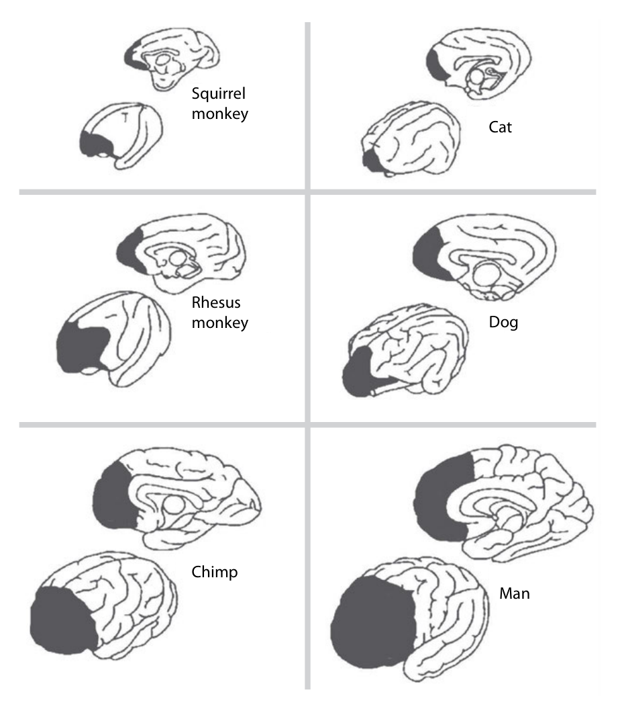
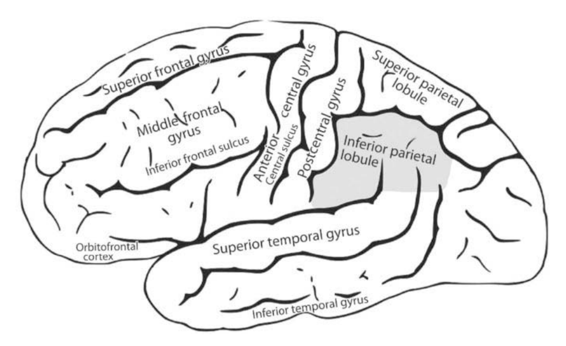

Chương 6 — Kỹ năng cho đời sống xã hội
6. Những kỹ năng cho đời sống xã hội
Thế giới xã hội cùng sự phức tạp đáng kinh ngạc của nó từ lâu đã là tâm điểm của các màn trình diễn—một cách không chính thức trong những tiểu phẩm ứng tác quanh đống lửa trại, và trang trọng hơn trong những vở diễn công phu của các nghệ sĩ chuyên nghiệp trên những sân khấu đồ sộ. Trong dàn nhân vật của một vở kịch, chắc chắn luôn có sự chênh lệch lớn về trí tuệ xã hội, đôi khi dẫn đến một kết cục bi thảm, như trong vở King Lear. Hài kịch cũng thường xoay quanh sự tương phản giữa người khéo léo trong giao tiếp và kẻ vụng về chốn đông người. Một nhân vật hài hước đến đau lòng, như Basil Fawlty (do John Cleese thủ vai trong Fawlty Towers), nhắc chúng ta nhớ về nỗi khổ sở gây ra bởi một lời nói dối ngớ ngẩn phải được che đậy bằng những mánh khóe ngày càng rắc rối nhằm tránh những rắc rối nghiêm trọng hơn, hoặc bởi một khoảnh khắc mất tự chủ ngắn ngủi khi đối phó với một vị khách phiền phức. Người vợ điềm tĩnh và khéo léo hơn của Basil là Sybil đóng vai trò làm nền, và sự chuyên nghiệp của một chủ khách sạn ở bà càng làm nổi bật những tình huống trớ trêu hoàn toàn không đáng có mà Basil thường xuyên tự đẩy mình vào. Điều khiến câu chuyện thêm hài hước là Basil tội nghiệp lại khá đáng mến, trong khi Sybil—người mà sự chân thành thường bị đặt dấu hỏi—thì không. Có những khác biệt nào trong não bộ giữa người khéo léo về mặt xã hội và người vụng về về mặt xã hội? Kỹ năng xã hội là gì? Trò chơi xã hội của con người đã trở nên phức tạp, tinh tế và đầy rẫy những tầng lớp ý nghĩa chồng chéo như thế nào? Ở phần trước của não bộ là vỏ não trước trán (prefrontal cortex - PFC), một vùng vỏ não rộng lớn có phần trước nhất nằm ngay sau trán.1 Chính PFC, cùng các đường dẫn truyền của nó tới những cấu trúc não bộ liên quan đến cảm xúc, tạo nên trí tuệ trong hành vi xã hội của con người. Khi vỗ vào trán sau một sai lầm ngớ ngẩn, là chúng ta đang làm rung nhẹ vùng PFC đấy. Trong quá trình tiến hóa của não bộ tông người (hominin), PFC đã mở rộng vượt bậc, và lớn hơn nhiều so với kích thước cơ thể ở người so với các loài họ hàng thuộc lớp thú như khỉ (xem hình 6.1). PFC của con người không chỉ khác biệt về kích thước, mà còn ở mật độ của các đường dẫn truyền chính kết nối nó với các vùng cảm giác ở phần sau của vỏ não.2
Các nhà khoa học thần kinh cho rằng lợi thế chọn lọc của một vùng PFC lớn hơn bao gồm khả năng dự đoán tốt hơn, cả trong lĩnh vực xã hội lẫn vật lý, đi kèm với khả năng tận dụng những dự đoán đó bằng cách trì hoãn sự thỏa mãn và thực hành khả năng tự kiểm soát.3 Điều này mang lại sự linh hoạt cao hơn trong việc phản ứng với những gì đang diễn ra trên thế giới, giải phóng chúng ta khỏi những phản ứng rập khuôn trước mối đe dọa và nỗi đau thường thấy ở các loài thú đơn giản hơn về mặt tiến hóa như loài gặm nhấm. Khả năng dự đoán lớn hơn cũng đi kèm với nhiều cơ hội thao túng hơn, trong cả lĩnh vực xã hội lẫn vật lý. Các cấu trúc vỏ não thiết yếu cho vận động và hành vi cũng nằm ở vỏ não trán, ngay phía sau PFC, và các kỹ năng nhận thức – vận động phức tạp dựa vào sự phối hợp giữa thùy trán và các cấu trúc dưới vỏ như hạch nền (basal ganglia). Nhìn chung, Mẹ Thiên Nhiên dường như đã tìm thấy một quân bài chiến thắng ở PFC, và nhờ vai trò của nó trong rất nhiều chức năng bậc cao, PFC của con người được mệnh danh là “cơ quan của nền văn minh.”4 Đáng tiếc là các cơ chế mà qua đó những mạch nơ-ron ở vỏ não trán thực hiện hàng loạt chức năng này vẫn chưa được hiểu rõ, dù các nhà khoa học thần kinh đã khám phá ra một số yếu tố cốt lõi trong câu chuyện. Các nhà giải phẫu học đã chứng minh rằng các cấu trúc trước trán được kết nối dày đặc với các cấu trúc dưới vỏ cổ xưa hơn về mặt tiến hóa như hạch hạnh nhân (amygdala), vùng dưới đồi (hypothalamus), hạch nền, và

nhân nằm (nucleus accumbens), và gắn kết chặt chẽ với cảm xúc, cảm giác, động lực thôi thúc và trạng thái chung của cơ thể.5 Một kỹ thuật giải phẫu mới, chụp ảnh khuếch tán tensor (tensor diffusion imaging - TDI), đặc biệt hữu ích trong nghiên cứu này, vì khác với các kỹ thuật giải phẫu truyền thống, nó có thể được sử dụng trên các đối tượng đang sống, bao gồm cả con người.6 Nghiên cứu TDI hé lộ một mô hình kết nối phổ biến khắp vỏ não, bao gồm cả PFC: các kết nối cục bộ dày đặc, các kết nối ở xa thưa thớt, tạo nên một cấu hình “thế giới nhỏ” (small world) tổng thể; không phải mọi thứ đều kết nối với mọi thứ khác, nhưng thông qua những “hàng xóm có kết nối rộng”, một chuỗi các bước nhảy ngắn cho phép bạn vươn tới mọi nơi khác.7
Những quan sát lâm sàng cẩn trọng trên các bệnh nhân đột quỵ và bệnh nhân bị tổn thương khu trú ở PFC đã cho thấy mối tương quan giữa tổn thương ở những vùng cụ thể và các khiếm khuyết chức năng cụ thể mà những bệnh nhân đó mắc phải. Những nghiên cứu này đã giúp lập bản đồ tổ chức chức năng của vùng vỏ não rộng lớn này. Chẳng hạn, tổn thương ở các vùng trán ổ mắt (orbitofrontal areas—nói nôm na là phần vỏ não nằm phía trên hốc mắt) có thể dẫn đến tăng động, suy giảm khả năng đánh giá các tín hiệu từ môi trường, thiếu sự đồng cảm, giảm hung hăng khi đối mặt với mối đe dọa, và sự thu mình về mặt cảm xúc lẫn xã hội. Phẫu thuật cắt thùy trước trán (prefrontal lobotomy), từng được thực hiện gần như thường quy trên những bệnh nhân khó trị cho đến giữa thập niên 1950, thường khiến đối tượng trở nên khá thờ ơ, với phản ứng cảm xúc bị cùn mòn.8 Nghiên cứu dược lý thần kinh về vai trò của dopamine và norepinephrine cùng các thụ thể của chúng cho thấy các chức năng của PFC rất nhạy cảm với những thay đổi về nồng độ của các chất dẫn truyền thần kinh này—những thay đổi ảnh hưởng đến sự chú ý, tâm trạng, hành vi xã hội và các phản ứng căng thẳng bình thường.9 Serotonin cũng là một nhân tố chủ chốt trong câu chuyện chất dẫn truyền thần kinh, đặc biệt là trong các khía cạnh tự điều chỉnh và lựa chọn bốc đồng.10 Các nhà khoa học thần kinh cũng chỉ ra rằng sự sụt giảm serotonin tương quan với việc gia tăng tỷ lệ từ chối các đề nghị thiếu công bằng trong một giao dịch trò chơi, một phát hiện bắt đầu thăm dò sự tinh tế của PFC.11 Trong quá trình trưởng thành, PFC phát triển chậm hơn tất cả các vùng vỏ não khác, và ở người, một số giai đoạn phát triển thần kinh của PFC chưa hoàn thiện cho đến tuổi trưởng thành, một phát hiện dường như nhất quán với nhận thức thông thường rằng trong hành vi xã hội và khả năng tự chủ, thanh thiếu niên vẫn chưa hoàn toàn trưởng thành. Sẽ thật tuyệt vời nếu chương này có thể giải thích cơ sở thần kinh cho hành vi xã hội phức tạp, làm sáng tỏ các cơ chế liên quan đến hành vi ở cả cấp độ mạch vĩ mô lẫn vi mô. Đáng tiếc là tri thức sinh học thần kinh vẫn chưa theo kịp mong muốn của chúng ta.
Trong mọi lĩnh vực của khoa học thần kinh, những khoảng trống khổng lồ trong tri thức vẫn đang hiện hữu trước mắt chúng ta, và PFC là một địa hạt đặc biệt khó nghiên cứu. PFC nằm ở tầng cao trong hệ thống phân cấp xử lý của não bộ, và tiếp nhận thông tin đầu vào đã được xử lý kỹ lưỡng từ khắp nơi trong não.12 Hoạt động ở một nơ-ron PFC đơn lẻ có thể rất khó diễn giải—liệu hoạt động đó liên quan đến một cảm xúc, đến sự chú ý, đến một kích thích cảm giác, đến một thứ đang được lưu giữ trong trí nhớ làm việc, đến một điều được kỳ vọng trong tương lai, hay đến sự chuẩn bị cho một cử động? Hoặc, rất có thể, là một tổ hợp nào đó của những yếu tố ấy? Nếu người làm thí nghiệm có thể kiểm soát đầu vào đã biết tới một nơ-ron, như có thể làm đối với các nơ-ron ở vỏ não thị giác, thì khả năng chắt lọc ra những kết quả có ý nghĩa về vai trò của nơ-ron đó sẽ cao hơn. Bằng cách kiểm soát và theo dõi đầu vào tới một nơ-ron ở vỏ não thị giác, các nhà khoa học thần kinh đã tìm thấy những nơ-ron, chẳng hạn, phản ứng một cách đáng tin cậy khi và chỉ khi kích thích là một vạch sáng di chuyển lên trên, những nơ-ron khác phản ứng mạnh khi và chỉ khi vạch sáng di chuyển xuống dưới, và cứ thế cho mọi hướng trên la bàn. Dựa trên chiến lược này, các nhà khoa học thần kinh đã có thể khảo sát các nơ-ron nằm ở bậc cao hơn trong hệ thống phân cấp xử lý, chẳng hạn như những nơ-ron đưa ra kết luận về hướng chuyển động khi bằng chứng về một kích thích thị giác tích tụ dần.13
Việc nghiên cứu vỏ não vận động lại gặp vấn đề ngược lại: mặc dù rất khó để biết chính xác các đầu vào tới một nơ-ron có ý nghĩa gì, nhưng nếu đầu ra của nó có thể tương quan một cách đáng tin cậy với các phản ứng hành vi cụ thể, chẳng hạn như cử động của ngón tay cái, thì nhà thí nghiệm có thể dùng thông tin đó để phân định nhiệm vụ của nơ-ron. Ở PFC, phát hiện chính cho đến nay, sử dụng các kỹ thuật ghi lại hoạt động của từng nơ-ron riêng lẻ, liên quan đến vùng PFC lưng-bên (dorsolateral PFC—hãy đặt tay bạn giữa tai và thái dương; bên trong chính là PFC lưng-bên).14 Nghiên cứu này được thực hiện trên khỉ rhesus. Một số nơ-ron ở vùng này đã được chứng minh là lưu giữ thông tin trong một nhiệm vụ trí nhớ làm việc. Nếu nhiệm vụ là ghi nhớ vị trí của một đốm sáng trên lưới sau khi đèn tắt, các nơ-ron ở PFC lưng-bên trở nên hoạt động và có tính chọn lọc không gian. Một số sẽ hoạt động nếu đốm sáng từng ở góc trên bên phải, số khác nếu ở góc dưới bên trái, và cứ thế. Hoạt động của chúng giảm xuống một khi con khỉ được phép chỉ lên màn hình nơi đốm sáng từng xuất hiện. Nhưng còn vai trò của PFC trong các khía cạnh của hành vi xã hội thì sao? Cơ sở thần kinh cho lòng trắc ẩn, cho khả năng tự chủ hay giải quyết vấn đề xã hội là gì? Nhiều kỹ thuật đã được sử dụng hiệu quả để khảo sát cách thức hoạt động của PFC, nhưng khi nghiên cứu chức năng PFC ở người, kỹ thuật phổ biến nhất là chụp cộng hưởng từ chức năng (functional magnetic resonance imaging - fMRI), được đánh giá rất cao vì tính không xâm lấn: không cấy điện cực, không gây tổn thương, không làm lạnh hay dùng chất phóng xạ. Tóm tắt ngắn gọn, cách thức hoạt động của nó như sau. Chụp cộng hưởng từ cho ra một bức ảnh tĩnh về bên trong cơ thể một người, dựa trên những thay đổi ở cấp độ hạ nguyên tử xảy ra khi người đó bước vào từ trường rất mạnh. Kỹ thuật MRI chức năng phát triển dựa trên nền tảng này bằng cách khai thác một đặc tính từ tính may mắn của máu: có sự khác biệt về đặc tính từ tính giữa máu mang oxy và máu đã bị tế bào lấy mất oxy (máu khử oxy). Sự khác biệt này, gọi là tương phản phụ thuộc nồng độ oxy trong máu (blood-oxygen-level-dependent - BOLD), có thể được các đầu dò thu nhận. Các tín hiệu được tính trung bình theo thời gian (vài giây). Những thay đổi này sẽ chẳng mấy thú vị nếu không có thực tế là tín hiệu BOLD tương quan với mức độ hoạt động trung bình của các tế bào trong một thể tích mô thần kinh, có kích thước có thể nhỏ hơn một milimét khối, tùy thuộc vào cường độ của nam châm được sử dụng. Các nơ-ron hoạt động càng mạnh, chúng càng tiêu thụ nhiều oxy, và tín hiệu BOLD phản ánh điều này, từ đó cung cấp một thước đo gián tiếp về các đặc tính sinh lý. Mặc dù hoạt động thần kinh không được đo trực tiếp bằng độ tương phản BOLD, nhưng trên giả định rằng thước đo gián tiếp này phản ánh tốt hoạt động thần kinh trung bình trong một thể tích nhỏ (một voxel: giống như một pixel, chỉ khác là một thể tích hình khối lập phương nhỏ), nhà nghiên cứu có thể dùng dữ kiện này để thiết kế các thí nghiệm nhằm khảo sát hoạt động não bộ trong một nhiệm vụ cụ thể, chẳng hạn như nhìn một khuôn mặt vui vẻ đang cười so với nhìn một khuôn mặt cau có. Để chỉ ra vị trí các vùng được khảo sát trong thí nghiệm, những mảng màu tương ứng với cường độ của tín hiệu BOLD được chồng lên hình ảnh giải phẫu não của đối tượng. Cần rất nhiều sự cẩn trọng trong cả khâu thiết kế thí nghiệm lẫn phân tích dữ liệu thu thập được để có kết quả có ý nghĩa, nhưng đặc biệt trong vài năm trở lại đây, các thí nghiệm sử dụng fMRI đã được cải thiện rõ rệt. Mặc dù fMRI là một kỹ thuật vô cùng mạnh mẽ để nghiên cứu não bộ của người khỏe mạnh, nhưng để hiểu các kết quả thu được từ kỹ thuật này, điều quan trọng là phải nhận thức được những hạn chế của nó—những hạn chế đôi khi bị che mờ trong các bản tin của truyền thông đại chúng về một thí nghiệm fMRI. Thông thường, những thay đổi thực tế trong tín hiệu BOLD được phát hiện ở các thí nghiệm fMRI là rất nhỏ, và việc sử dụng màu sắc—được thêm vào để tăng tính trực quan của dữ liệu—có thể che lấp thực tế đó. Nếu bức ảnh não bộ hiển thị một vùng được tô màu đỏ và vùng khác màu xanh lục, một độc giả thông thường có thể cho rằng các thay đổi là khá lớn, dù trên thực tế chúng có thể rất nhỏ bé. Trong một quy ước tô màu mà các nhà nghiên cứu hay dùng, chỉ vùng nào ghi nhận sự thay đổi mới được tô màu, còn phần còn lại của não bộ để màu đen. Điều này tiện lợi cho những người trong ngành, nhưng nó khiến sinh viên lầm tưởng rằng trong điều kiện thí nghiệm, chỉ có vùng được tô màu là hoạt động, trong khi phần còn lại của não bộ đang ngủ khò. Suy luận đó hoàn toàn sai, và vùng được tô màu chỉ đơn thuần biểu thị sự thay đổi so với mức nền (baseline) của hoạt động tại riêng vùng đó. Chắc chắn có rất nhiều hoạt động đang diễn ra ở những nơi khác, phần lớn trong số đó có khả năng hỗ trợ công việc thần kinh tại vùng được tô màu, nhưng trừ khi mức độ hoạt động thay đổi, nó sẽ không được thể hiện trên hình ảnh. Một máy quét fMRI với độ phân giải không gian một milimét khối là một kỳ tích khoa học so với các kỹ thuật của hai mươi năm trước. Dẫu vậy, thật đáng tỉnh táo khi nhận ra rằng trong một milimét khối mô vỏ não, có khoảng 100.000 nơ-ron và xấp xỉ một tỷ khớp thần kinh (synapse).15 Tín hiệu BOLD tất nhiên không thể theo dõi những thay đổi trong hoạt động của từng nơ-ron riêng lẻ—cái tăng, cái giảm, cái không đổi—bên trong một milimét khối nhất định. Cùng lắm, nó phản ánh hoạt động tổng hợp trong vài giây. Nó cũng không thể lý giải những phép toán (các bước tính toán) nào đang được thực hiện bởi các mạng lưới nơ-ron trong một voxel nhất định. Hơn nữa, một số nơ-ron trong một milimét khối sẽ chỉ có các kết nối cục bộ ngắn, trong khi những nơ-ron khác lại có các kết nối dài nhiều centimet và do đó vượt ra ngoài phạm vi của quần thể được đại diện trong voxel đó. Một số sẽ nhận đầu vào từ nơi khác, một số sẽ gửi đi nơi khác, nhưng tín hiệu BOLD không nhạy cảm với dòng chảy thông tin. Quan sát một tín hiệu fMRI cho thấy hoạt động tăng lên ở một vùng nhỏ cũng giống như nghe thấy tiếng ồn ào ngày càng lớn từ phòng vui chơi của trẻ em, nhưng không biết mỗi đứa trong số hai mươi đứa trẻ đang làm trò gì. Hơn nữa, dù không nghe thấy tiếng ồn ào đáng kể nào dưới bếp, sự vắng mặt của tiếng ồn không có nghĩa là không có trò nghịch ngợm nào đang diễn ra. Tóm lại, fMRI không tiết lộ những gì đang diễn ra ở cấp độ vi mô của các nơ-ron và mạng lưới của chúng. Nếu thiếu điều đó, việc đi tới tận cùng các phép toán và công việc của PFC là rất nan giải. Tuy nhiên, xin nhắc lại, fMRI là một kỹ thuật vô cùng quan trọng để nghiên cứu tổ chức não bộ ở người, cho phép chúng ta thấy, chẳng hạn, nơi nào có sự khác biệt giữa não bộ của những kẻ thái nhân cách (psychopath) và não bộ của các đối tượng đối chứng.16
Một hệ quả của việc chuyển đổi phân tích dữ liệu fMRI sang dạng dễ hình dung trực quan là những bức ảnh não bộ với các mảng màu tương ứng với việc đối tượng thực hiện các nhiệm vụ cụ thể như nhận diện một mẫu xe hơi (Cadillac Seville hay Ford Crown Victoria) dễ nuôi dưỡng ý niệm rằng vỏ não có các mô-đun (module) hoặc trung tâm tương đối tự trị, chẳng hạn như một mô-đun chuyên biệt để nhận diện các mẫu xe hơi khác nhau. Mặc dù não bộ quả thực có sự chuyên môn hóa theo vùng, ý niệm về một mô-đun tự trị mạnh hơn nhiều so với một vùng chuyên môn hóa, vì nó hàm ý rằng các nơ-ron trong một mô-đun chỉ dành riêng cho đúng nhiệm vụ đó và nhiệm vụ đó chỉ được hoàn thành bởi riêng các nơ-ron ấy. Giả thuyết cho rằng vỏ não được cấu thành từ các mô-đun tự trị đã truyền cảm hứng cho một số nhà tâm lý học tuyên bố rằng não bộ được tổ chức như một con dao quân đội Thụy Sĩ, nơi mỗi công cụ hoạt động độc lập với các công cụ khác.17 Một lý do giải phẫu lớn chống lại quan điểm này là bản chất lặp vòng (looping) của các đường dẫn truyền—tiến lên, lùi lại và sang ngang, dài lẫn ngắn. Khắp vỏ não, chúng ta đều thấy sự hội tụ và phân kỳ của thông tin.18 Câu chuyện mô-đun tự trị có thể nhất quán với dữ liệu fMRI hiện có, nhưng nó không nhận được sự ủng hộ mạnh mẽ từ dữ liệu đó. Vùng được chỉ ra rốt cuộc chỉ là một vùng có sự khác biệt ổn định giữa trạng thái nghỉ và trạng thái thực hiện nhiệm vụ (ví dụ: nhận diện mẫu xe hơi). Nếu vùng đó không nhận được đầu vào từ nhiều vùng não khác, chức năng đang được nghiên cứu (nhận diện mẫu xe hơi) sẽ không thể thực hiện được. Trong não bộ, tính kết nối là tối quan trọng, và các đường dẫn truyền lặp vòng là quy luật. Tất cả những điều đó làm lu mờ triển vọng của thuyết mô-đun theo nghĩa “con dao quân đội Thụy Sĩ” cứng nhắc.19
Việc phát triển các kỹ thuật soi chiếu hiệu quả không phải là vấn đề duy nhất mà các nhà nghiên cứu PFC phải đối mặt. Theo một nghĩa sâu xa, chúng ta không chắc chắn công việc thực sự của PFC là gì: liệu chúng ta đã có đúng hệ thống từ vựng chưa? Việc diễn giải dữ liệu tổn thương và fMRI thường kéo theo việc triển khai các phạm trù quen thuộc của lý thuyết tâm trí (theory-of-mind), chẳng hạn như trì hoãn sự thỏa mãn và tự kiểm soát, nhưng chúng ta phải đặt câu hỏi liệu những phạm trù đó có phù hợp để nắm bắt những gì đang diễn ra dưới góc nhìn của não bộ hay không. Ngược lại, đối với các giai đoạn đầu của vỏ não thị giác, tính chuẩn xác của phạm trù ít gây vấn đề hơn. Chẳng hạn, người ta có thể nói một cách hợp lý rằng một nơ-ron được điều chỉnh để phản ứng với hướng chuyển động thẳng đứng của một kích thích. Tuy nhiên, ít rõ ràng hơn nhiều là liệu những cách diễn đạt như “trì hoãn sự thỏa mãn” hay “vội vàng kết luận” hay “nỗi sợ phi lý” có thực sự được mạch não công nhận hay không. Liệu các thuật ngữ như sự yếu đuối của ý chí hay sức mạnh ý chí, chẳng hạn, có thực sự tương ứng với một chức năng nào đó trong PFC không? Đối với các nhà thực vật học, thuật ngữ cỏ dại (weed) không thực sự nắm bắt một phạm trù được thừa nhận trong thế giới thực vật; việc áp dụng nó phụ thuộc rất nhiều vào lợi ích của con người vốn có thể thay đổi thất thường và theo những tiêu chí hoàn toàn ngoại lai. Một số người gọi cây thì là là cỏ dại, những người khác lại trồng nó làm rau thơm. Tương tự, trong bối cảnh tâm trí và não bộ, một số thuật ngữ, như ra quyết định hay ức chế phản ứng, có khả năng ánh xạ được lên mạch não, nhưng những thuật ngữ khác rút ra từ vốn từ vựng cấp độ hành vi của chúng ta, dù hữu ích trong sinh hoạt đời thường của đời sống xã hội, có thể ánh xạ rất kém, nếu không muốn nói là không thể, lên mạch thần kinh của PFC. Nỗi lo lý thuyết này trở thành nỗi lo cụ thể đối với các nhà khoa học thần kinh nghiên cứu PFC, những người đang cố gắng phân loại đâu là những thuật ngữ thực sự có sức giải thích và đâu là những thuật ngữ không thể bám rễ chính xác về mặt thần kinh, như suy sụp thần kinh (nervous breakdown)—thứ có khả năng liên quan đến một loạt nguyên nhân bán chồng chéo khá khác nhau—hay sức mạnh ý chí, thứ cũng có thể không tương ứng với một đặc tính não bộ đơn lẻ nào.20
Trên tinh thần thực dụng và thận trọng, chúng ta sẽ xem xét kỹ lưỡng một số ý tưởng thời thượng về mối liên hệ giữa sự thấu hiểu xã hội và các cơ chế nơ-ron, đặc biệt là những ý tưởng liên quan đến cơ sở thần kinh cho việc quy gán các trạng thái tinh thần cho bản thân và người khác (lý thuyết tâm trí) và liên quan đến nơ-ron gương (mirror neuron—sẽ được giải thích ngay sau đây). Niềm tin phổ biến về cách các nơ-ron gương giải thích kỹ năng quy gán trạng thái tinh thần đã cất cánh theo kiểu bỏ lại bằng chứng phía sau lớp bụi mù, và do đó có lẽ sẽ rất hữu ích nếu đem ý tưởng này ra kiểm tra khắt khe để xác định xem điều gì thực sự vững chắc. Tuy nhiên, trước đó, chúng ta sẽ thiết lập bối cảnh bằng cách xem xét các khía cạnh trung tâm của nhận thức xã hội, bao gồm cả việc hình thành lương tâm. Gần cuối chương, chúng ta cũng sẽ cân nhắc xem liệu mối liên hệ giữa chứng tự kỷ và các nơ-ron gương bị lỗi đã được xác lập hay chưa. Chúng ta sẽ xem xét một hành vi xã hội hấp dẫn được gọi là bắt chước vô thức (unconscious mimicry), và khám phá một lời giải thích khả dĩ cho câu hỏi tại sao con người, cùng một số loài chim và thú xã hội khác, lại thường xuyên và liên tục dành rất nhiều năng lượng cho hành vi này.
Tri thức xã hội, Học tập xã hội,
Ra quyết định xã hội
Đời sống xã hội của các loài linh trưởng phức tạp hơn nhiều so với loài gặm nhấm. Chẳng hạn, trong các bầy khỉ đầu chó (baboon), địa vị xã hội phụ thuộc vào thứ hạng của dòng họ mẫu hệ—dòng dõi truyền từ mẹ sang con gái—mà một cá thể được sinh ra trong đó. Bầy khỉ đầu chó theo chế độ mẫu hệ; khỉ đực non rời bỏ bầy gốc, trong khi khỉ cái ở lại. Mỗi con vật đều hiểu mỗi cá thể thuộc dòng họ mẫu hệ nào, các dòng họ mẫu hệ được xếp hạng ra sao so với nhau, và ai đứng ở vị trí nào trong từng dòng họ (con lớn có thứ hạng cao hơn con nhỏ).21 Các mối quan hệ chải chuốt, những lời đe dọa và các âm thanh phát ra đặc thù phụ thuộc rất nhiều vào vị trí của một cá thể trong không gian xã hội. Việc theo dõi xem ai là ai trong bầy, danh tiếng của từng cá thể, và những kiểu kỳ vọng nào mà người khác đặt vào bản thân mình cũng như nhiều cá thể khác, đòi hỏi rất nhiều tri thức xã hội. Khả năng đưa ra những dự đoán và quyết định xã hội tốt càng lớn—khi các yếu tố khác ngang nhau—thì cơ hội sống khỏe mạnh càng cao; đến lượt nó, cơ hội sinh sản thành công càng lớn. Đời sống xã hội của con người, dù ở các ngôi làng săn bắt hái lượm, thị trấn nông nghiệp hay các thành phố, dường như còn phức tạp hơn cả khỉ đầu chó hay tinh tinh. Thông thường con người nắm giữ kiến thức chi tiết về tính cách, khí chất, quan hệ họ hàng và danh tiếng của rất nhiều cá nhân.22 Ngoài ra, con người đặc biệt khéo léo trong việc điều chỉnh hành vi tùy thuộc vào ngữ cảnh—tại đám cưới, đám tang, hội chợ thương mại, trong tình huống thảm họa, trong cuộc đi săn, tại nơi làm việc, trong chiến tranh, v.v. Kiến thức về cách cư xử trong các ngữ cảnh đa dạng thường được tiếp thu mà không cần chỉ dẫn tường minh về các quy ước liên quan. Mặc dù động lực tiếp thu kiến thức về các tập quán xã hội có thể nảy sinh từ khuynh hướng của não bộ là muốn thuộc về một tập thể và ghét sự chia cắt, nhưng các dữ kiện và kỹ năng cụ thể là do học được. Cũng như ở động vật không phải người, một số người có thể học tốt hơn, nhanh hơn hoặc hiệu quả hơn những người khác. Con người là những kẻ bắt chước bậc thầy, có lẽ ở mức độ lớn hơn bất kỳ loài thú nào khác.23 Khả năng bắt chước một kỹ năng mà người lớn tuổi đã học được đặt con người non trẻ vào một lợi thế độc nhất vô nhị: nó không phải học mọi thứ bằng phương pháp thử và sai.24 Một đứa trẻ có thể học từ người lớn cách nhóm lửa và giữ lửa, cách rình săn một con nai sừng tấm, cách chuẩn bị cho mùa đông, cách nẹp một cái xương gãy. Kết hợp lại, động lực học hỏi bằng cách bắt chước và khuynh hướng nâng cấp kiến thức đó bằng những ý tưởng mới chính là thứ tạo ra sự tích lũy dần dần những cách làm khéo léo có thể truyền từ thế hệ này sang thế hệ khác. Tức là, nó tạo ra văn hóa. Con người, dù là những người học hỏi xã hội ấn tượng, không phải là loài duy nhất học từ đồng loại. Vẹt, vẹt mào, chim sáo, chim sẻ thông và chim sẻ cũng là những kẻ bắt chước thành thạo, và học được những bài hót phức tạp. Chim nhại (mockingbird) ở khu phố chúng tôi đôi khi cất tiếng gọi của chim cút, rồi chuyển sang giọng chim sẻ, rồi giả tiếng chuông điện thoại reo. Một số loài chim, như chim manakin xanh ở Argentina, học những điệu nhảy phức tạp và cạnh tranh bạn tình cái thông qua các màn trình diễn vũ đạo.25 Cá heo mũi chai bắt chước hành vi của huấn luyện viên,26 và những kẻ săn mồi non như báo sư tử và linh miêu đuôi cộc thực sự học từ cha mẹ cách rình rập và giết con mồi, cũng như nơi tìm thấy chúng. Báo sư tử mẹ sẽ mang một con thỏ bị thương về hang để con non tập săn. Những con chồn đất (meerkat) kỳ cựu mang những con bọ cạp đã bị ngắt ngòi nọc về hang để con non có thể thực hành một cách an toàn. Andrew Whiten, Victoria Horner và Frans de Waal, trong các nghiên cứu thực nghiệm được kiểm soát chặt chẽ về “sự truyền tải văn hóa” ở tinh tinh, cũng phát hiện rằng tinh tinh học được một chiến lược kiếm ăn mới bằng cách quan sát một con tinh tinh thành thạo, trong khi những con không được quan sát kỹ năng đó đã không tự nghĩ ra được phương pháp.27 (Như họ nhận xét, điều thiết yếu khi nghiên cứu sự bắt chước ở động vật là hành vi được chọn cho chúng bắt chước phải là thứ có ý nghĩa sinh thái—một thứ mà loài vật đó quan tâm.) Các quan sát thực địa của các nhà nhân học cho thấy một nhóm khỉ đầu chó cụ thể có thể có những phong tục địa phương riêng, chẳng hạn như khi các con đực nắm tinh hoàn của nhau (có lẽ là một nghi thức tin cậy) khi chuẩn bị cho một cuộc tập kích hung hãn nhắm vào các con đực có thứ bậc cao hơn. Khỉ mũ mặt trắng tại Dự án Khỉ Lomas Barbudal ở Costa Rica cũng có những truyền thống địa phương độc đáo, như thọc ngón tay vào nhãn cầu của nhau và mút ngón tay nhau, hoặc những trò chơi trong đó một con khỉ cắn đứt một túm lông của con khác, rồi cả hai lao vào cuộc giằng co giành giật đầy vui nhộn.28 Sự bắt chước ở trẻ sơ sinh cũng đã được quan sát thấy ở khỉ đuôi lợn rhesus,29 và sự bắt chước biểu cảm khuôn mặt ở đười ươi non khi chơi đùa.30
Để làm bằng chứng giai thoại liên quan đến loài chó, tôi xin kể câu chuyện này: Tôi thường dắt cặp chó tha mồi lông vàng (golden retriever) của chúng tôi đi dạo trên sân gôn vào sáng sớm trước khi những người chơi gôn đầu tiên xuất hiện. Với nỗ lực đáng kể, tôi đã huấn luyện cặp chó đầu tiên tránh xa các hố cát và khu vực cỏ gạt (putting green—có sự phân biệt khá tinh tế giữa khu vực cỏ gạt và đường bóng fairway, trừ khi bạn là người chơi gôn, nhưng chủ yếu liên quan đến độ cao cắt cỏ). Khi một con chết ở tuổi 13, chúng tôi nhận nuôi thêm một cặp chó con thứ hai. Chúng nhanh chóng quấn quýt với lão Max, và lão cũng mến chúng. Khi chúng tôi bắt đầu đi dạo trên sân gôn, tôi đã chuẩn bị tinh thần phải huấn luyện Duff và Farley như từng làm với cặp đầu tiên. Thế nhưng, chúng chẳng cần tôi huấn luyện, mà đơn giản là không bước lên khu vực cỏ gạt hay chui vào các hố cát. Hành vi này tiếp tục không đổi ngay cả sau khi lão Max qua đời vài tháng sau đó. Tôi chưa từng thấy bất cứ điều gì có thể khẳng định chắc chắn là hành vi bắt chước, nên nếu thực sự chúng đã sao chép Max, thì hẳn điều đó đã diễn ra khá tinh tế.
Học các kỹ năng xã hội
Sinh ra với bộ não còn rất non nớt, trẻ em loài người phụ thuộc vào cha mẹ và những người sẵn lòng giúp đỡ trong một khoảng thời gian kéo dài. Lợi ích của sự non nớt lúc mới sinh là bộ não đang phát triển có thể tận dụng những tương tác với môi trường để tự điều chỉnh cho phù hợp với vô vàn quy luật của bất kỳ thế giới vật lý và xã hội nào mà chúng đang sống. Chơi đùa trong những thế giới đó, nghịch ngợm và lêu lổng, có thể dẫn đến những khám phá hữu ích. Trò chơi ở những loài săn mồi non gắn liền rõ rệt với hành vi mà sau này chúng sẽ mài giũa để giết con mồi, giao phối và tự vệ.31 Từ góc độ tiến hóa, việc học hỏi có những lợi thế rõ rệt về hiệu quả và tính linh hoạt so với việc có sẵn mọi thứ được “lập trình cứng” từ trong bụng mẹ.32
Ở tất cả các loài thú có tính xã hội cao, con non phải học cách hòa nhập trong nhóm, đầu tiên là với mẹ và cha, sau đó là với anh chị em, anh chị em họ, v.v. Đứa trẻ đang mọc răng học cách không cắn vào bầu vú mẹ, đứa trẻ chập chững học cách tránh ông chú khó tính, trẻ em phải học cách chờ đến lượt, chịu đựng sự hụt hẫng, chơi công bằng, làm việc vặt, v.v.
Hình thành lương tâm
Khi lớn lên, chúng ta nhận được sự tán thành khi tuân thủ, và sự bất bình khi vi phạm các tập quán xã hội, và chúng ta cảm thấy khoái cảm hay đau đớn tương ứng.33 Việc học hỏi đạo đức thuở ban đầu được tổ chức xoay quanh các nguyên mẫu hành vi, và dựa vào hệ thống phần thưởng để khiến chúng ta cảm thấy nỗi đau cảm xúc trước một số sự kiện (ví dụ: ăn cắp), và niềm vui cảm xúc trước những sự kiện khác (ví dụ: cứu người).34 Thông qua các tấm gương, đứa trẻ dần nhận diện được nguyên mẫu của sự công bằng, sự thô lỗ, bắt nạt, chia sẻ và giúp đỡ. Hiểu biết của trẻ cũng được định hình bởi những câu chuyện truyền miệng, truyện ngụ ngôn và bài hát của thị tộc. Như triết gia Simon Blackburn nhận xét,
Môi trường cảm xúc và đạo đức nơi trẻ em lớn lên có mặt ở khắp nơi và đa diện, được những người chăm sóc chúng kiến tạo cẩn trọng, ngập tràn những vở kịch dài tập, những câu chuyện, truyền thuyết và lời đồn đại đầy rẫy kẻ ác và người hùng, được truyền tải qua những nụ cười và cái cau mày cùng vô số dấu hiệu của sự quý trọng và ghét bỏ, và dần dần được trẻ bước vào thông qua thực hành, bắt chước, uốn nắn và trau chuốt.35
Một khi đứa trẻ đã nội tâm hóa các tập quán địa phương và biết điều gì được kỳ vọng, chỉ riêng việc cân nhắc gian lận hay ăn cắp cũng có khả năng đi kèm với những hình ảnh về hậu quả, và khi những hậu quả đó bao gồm sự bất bình của xã hội, hệ thống đau đớn sẽ hoạt động, dù chỉ ở mức độ nhẹ. Người ta có thể nói rằng đứa trẻ nhờ thế nhận ra kế hoạch đó là sai trái, hoặc lương tâm mách bảo nó rằng làm hành động đó sẽ là sai (hình 3.8, trang 51, minh họa hệ thống phần thưởng). Vì nỗi đau tổng quát của sự xa lánh và chê trách rất khó chịu, còn khoái cảm của sự tán thành và cảm giác thuộc về lại rất đáng giá, nên những gì được học liên quan đến các tập quán xã hội mang một sắc thái cảm xúc mạnh mẽ tương ứng. Những cảm xúc về đúng và sai này mạnh mẽ đến mức chúng có thể được coi là có nguồn gốc thiêng liêng, và các tập quán ấy được xem là khách quan và phổ quát. Tập quán của thị tộc mình có thể hiện ra như tuyệt đối và hợp lý; những tập quán khác biệt có thể bị coi là man rợ và phi lý. Nhìn chung, việc nội tâm hóa các chuẩn mực xã hội thông qua hệ thống phần thưởng/trừng phạt có lẽ phục vụ khá tốt cho các nhóm xã hội loài người. Các cá nhân sẽ dám mạo hiểm rất nhiều, đôi khi cả mạng sống của mình, để bảo vệ nhóm, hoặc vì một nguyên tắc như bãi bỏ chế độ nô lệ hay thậm chí vì ý niệm về thiên đường. Sự nội tâm hóa này cũng đồng nghĩa với việc các tập quán hiện hành có thể mang sức ì đáng kể, và chỉ có thể thay đổi rất chậm chạp, từng chút một. Khi các tập quán đó hàm chứa trí tuệ tích lũy lâu đời, điều này có thể có lợi. Khi hoàn cảnh đòi hỏi một sự thay đổi, sức ì này có thể trở thành một trở ngại. Bất chấp nhận thức rằng sự thay đổi sẽ mang lại lợi ích—chẳng hạn như việc giáo dục phụ nữ giúp nâng cao sự thịnh vượng kinh tế của nhóm—thái độ vẫn thay đổi chậm chạp; nhưng chúng có thể thay đổi, thường dễ hơn ở người trẻ so với người già, và dễ xảy ra hơn khi có sự tiếp xúc rộng rãi với các giá trị ngoài dòng họ.36
Một số thái độ thâm căn cố đế, chẳng hạn như sự thù địch đối với một nhóm ngoại lai (out-group) cụ thể dưới hình thức phân biệt chủng tộc, có thể đặc biệt kháng cự lại sự thay đổi. Trong những trường hợp này, việc nội tâm hóa sâu sắc các tập quán xã hội có thể không phục vụ tốt cho nhóm, mà trái lại góp phần gây ra những bất ổn giằng xé và nhiều loại tổn thất, về mặt xã hội cũng như các mặt khác. Trong thời gian gần đây, xung đột sắc tộc ở Rwanda và vùng Balkan đã nhắc nhở chúng ta rằng sự thù địch với nhóm ngoại lai có thể bám rễ sâu sắc đến mức thảm khốc.
Quy gán trạng thái tinh thần cho bản thân và người khác
Nếu có thể học cách dự đoán hành vi của người khác, chúng ta thường có thể lường trước và tránh được rắc rối hoặc tận dụng các cơ hội đã dự liệu. Khi dự đoán hành vi phức tạp, việc diễn giải hành vi của người khác như là biểu hiện của các trạng thái tinh thần bên trong của họ mang lại lợi thế rất lớn. Vì thế, chúng ta có thể giải thích sai sót của ai đó là do nhìn nhầm hoặc do thiếu tập trung; chúng ta có thể dự đoán việc ai đó tham gia bảo vệ ngôi làng sắp tới dựa trên việc anh ta có động lực rất cao để bảo vệ gia đình mình. Việc diễn giải hành vi của người khác theo các trạng thái tinh thần như ý định hay tri giác có thể làm tăng hiệu quả dự đoán so với chiến lược chỉ đơn thuần liên kết một cử động cơ thể cụ thể với một kết quả cụ thể (ví dụ: một bàn tay giơ lên gắn liền với việc đèn tắt). Đây là một lý do: cùng một cử động có thể là kết quả của những ý định rất khác nhau. Chẳng hạn, cử chỉ giơ ngón tay cái hướng lên có thể truyền tải vô số điều, tùy theo quy ước địa phương: một số cầu thủ bóng đá dùng nó như lời xin lỗi vì một pha xử lý lỗi; trong môn chèo thuyền kayak, chúng tôi dùng nó để có nghĩa là “đi thôi”, giống như các phi công trên tàu sân bay; người La Mã dùng nó để ra hiệu “hãy tha mạng cho võ sĩ giác đấu”; ở các nước Trung Đông nó có thể mang nghĩa tương đương với câu chửi thô tục. Do đó, việc dự đoán bạn sẽ làm gì tiếp theo sẽ hiệu quả hơn nếu tôi có khả năng diễn giải hành vi của bạn dựa trên ý định hoặc cảm xúc bên trong của bạn, thay vì chỉ liên kết các cử động cụ thể với các kết quả cụ thể. Để vươn lên hình thức biểu diễn trừu tượng hơn này, thông tin nền tảng về ham muốn và niềm tin, về danh tiếng và ngữ cảnh, cùng nhiều thứ khác nữa phải được đưa vào quá trình kiến tạo biểu diễn trừu tượng về điều người kia dự định làm. Ở chiều ngược lại, cùng một ý định có thể được thực hiện bằng những phương tiện rất khác nhau—tôi có thể uống nước bằng cách cúi xuống vòi phun, vục nước từ suối bằng hai bàn tay, nâng một chiếc ly, hoặc ngửa cổ hứng nước mưa vào miệng.37 Tôi có thể gian lận theo cả nghìn cách khác nhau, hoặc hợp tác theo cả nghìn cách khác nhau. Một lần nữa, việc diễn giải những gì bạn đang làm và sắp làm dưới góc độ mục tiêu và ý định mang tính trừu tượng cao hơn và hiệu quả hơn nhiều so với việc chỉ đơn thuần liên kết các cử động cụ thể với các kết quả cụ thể. Không chỉ độ chính xác của các dự đoán được nâng cao, mà việc sở hữu một khung hệ thống để quy gán các trạng thái tinh thần còn mở ra một địa hạt thấu hiểu hoàn toàn mới, từ đó tạo điều kiện cho những tương tác tinh vi hơn nữa. Đây là một trường hợp đơn giản hóa một cách nhân tạo để truyền tải tinh thần điều tôi muốn nói: nếu tôi biết bạn có thể nhìn thấy đứa trẻ mới biết đi đang bước về phía hồ, và tôi biết bạn muốn đảm bảo bé an toàn nếu bé xuống bơi, đồng thời bạn tin rằng tôi sẽ không làm người cứu hộ trong dịp này, thì tôi có thể dự đoán bạn sẽ đi cùng đứa trẻ ra hồ. Nếu tôi biết bạn không nhìn thấy đứa trẻ đang đi về phía hồ, tôi dự đoán bạn sẽ tiếp tục đi về phía khu vườn, và tôi sẽ cần báo cho bạn biết để bạn làm khác đi. Vấn đề ở đây là, bằng cách khai thác các mối liên kết có hệ thống giữa các trạng thái tinh thần khác nhau, tôi có trong tay một công cụ mạnh mẽ để điều hướng thế giới xã hội của mình và vươn xa hơn vào tương lai xã hội. Xét những lợi ích này, người ta có thể coi việc sở hữu một lý thuyết tâm trí (theory of mind)—tức có các kỹ năng quy gán trạng thái tinh thần cho bản thân và người khác—dưới góc độ các thực hành biểu diễn hỗ trợ việc dự đoán và giải thích hiệu quả. Một số người khéo léo hơn hẳn những người khác trong các tình huống xã hội rất phức tạp, chẳng hạn như các cuộc họp khoa hay đại hội chính trị. Ví dụ, Jon Stewart (người dẫn chương trình The Daily Show) cực kỳ tài tình trong việc nắm bắt sự tương tác qua lại giữa cảm xúc, nỗi sợ, kỳ vọng và nhận thức của các khách mời, cộng thêm việc có thông tin nền tốt, và nhờ vậy ông có thể dẫn dắt cuộc trò chuyện một cách mượt mà theo những lối đi sâu sắc và thường khiến đối phương phải hạ vũ khí. Chính tính hệ thống của khung quy gán trạng thái tinh thần này đã thúc đẩy việc áp dụng tên gọi “lý thuyết tâm trí”, bởi các bộ phận được đan kết với nhau thành một chỉnh thể năng động giống như các bộ phận trong một lý thuyết khoa học. Con người rất thành thạo trong việc quy gán mục tiêu, ham muốn, ý định, cảm xúc và niềm tin cho nhau. Chúng ta có thể hình dung thế giới từ góc nhìn của người khác, và chúng ta có thể tưởng tượng các kịch bản cho tương lai. Chúng ta cũng đồng cảm với hoàn cảnh khốn khó và nỗi đau của người khác. Đánh giá từ hành vi của khỉ, tinh tinh và chim giẻ cùi bụi (scrub jay), rõ ràng con người không phải là loài duy nhất đạt được sức mạnh biểu diễn trong việc dự đoán người khác đang toan tính gì thông qua khả năng quy gán trạng thái tinh thần cho người khác.38
Khả năng quy gán trạng thái tinh thần cho người khác có thể phong phú hơn hoặc kém hơn, tinh vi hơn hoặc kém hơn. Khỉ rhesus có thể khá chính xác trong việc quy gán các mục tiêu và cảm giác đơn giản, nhưng chúng yếu hơn con người hoặc tinh tinh trong việc quy gán các mục tiêu phức tạp. Loài chó, vốn được lai tạo để nhạy cảm với mục đích của con người, có thể tỏ ra khéo léo một cách kỳ lạ trong việc dự đoán chủ nhân muốn gì hoặc sẽ làm gì. Hơn nữa, dù ngôn ngữ có thể làm tăng thêm sự tinh vi của lược đồ biểu diễn, ngôn ngữ không phải là điều kiện cần, ít nhất là đối với một phiên bản sơ khai của sự quy gán tinh thần—chim giẻ cùi và tinh tinh đều không có ngôn ngữ. Ngoài ra, vì trẻ em có thể học ngôn ngữ của sự quy gán tinh thần, nhiều khả năng chúng đã có sẵn một số kỹ năng biểu diễn làm nền tảng để xây dựng tiếp. Trong giới tâm lý học, “đọc tâm trí” (mind reading) đôi khi là tên gọi được ưa chuộng cho năng lực này, nhưng vì cụm từ đó có vẻ hàm ý nhiều thành tựu nhận thức hơn mức dữ liệu cho phép, tôi thấy tốt hơn nên dùng một cách diễn đạt khiêm tốn hơn: “năng lực quy gán tinh thần”.39
Những câu hỏi tôi muốn tập trung vào lúc này là: Chúng ta biết gì về các cơ chế thần kinh làm nền tảng cho nhiều kỹ năng khác nhau liên quan đến việc quy gán trạng thái tinh thần cho người khác và cho chính mình? Giả sử năng lực này quy gán nhiều thành phần đan xen (ý định, niềm tin, cảm giác, ham muốn, v.v.) tạo thành một thứ giống như lược đồ biểu diễn mạch lạc, vậy động lực học bên trong của lược đồ này là gì? Sự mạch lạc của nó nằm ở đâu?
Nơ-ron gương và Sự quy gán tinh thần
(Lý thuyết tâm trí)
Khi suy ngẫm về các cơ chế thần kinh giúp thấu hiểu trạng thái tinh thần của người khác, nhiều nhà khoa học nhận thức đã vô cùng phấn khích trước phát hiện về nơ-ron gương (mirror neuron) ở khỉ rhesus.40 Phát hiện này được thực hiện tại Đại học Parma, trong phòng thí nghiệm của Giacomo Rizzolatti, và được công bố lần đầu tiên vào năm 1992.41 Nơ-ron gương là một tập hợp con các nơ-ron ở vỏ não trán của khỉ (cụ thể là một vùng gọi là F5, ở vỏ não tiền vận động và ở vỏ não đỉnh dưới (IP) (hình 6.2 cho thấy vị trí các vùng này) phản ứng cả khi con khỉ nhìn thấy một cá thể khác cầm nắm một vật thể (ví dụ: tôi đưa thức ăn vào miệng mình), lẫn khi chính nó tự thực hiện hành động đó (ví dụ: nó đưa thức ăn vào miệng nó). Một nhóm thiểu số các nơ-ron vùng F5 được kiểm tra, khoảng 17%, cho thấy đặc tính này. Các hành động vô nghĩa, các hành động không có vật thể, sự hiện diện đơn thuần của một vật thể, hoặc hành động của một bàn tay khi phần còn lại của cơ thể không thể nhìn thấy, đều không kích hoạt những nơ-ron đặc biệt này ở khỉ. Tiếp nối phát hiện ban đầu, phòng thí nghiệm Rizzolatti đã chứng minh rằng các nơ-ron gương có thể nhạy cảm với những khác biệt rất nhỏ giữa hai
![Hình 6.2. A (Trên): Hình vẽ não khỉ, cho thấy vùng F5 ở vỏ não tiền vận động nơi các nơ-ron gương được tìm thấy lần đầu tiên. F1 là vùng vận động sơ cấp. F2, F4 và F5 là các vùng tiền vận động nằm phía trước dải vận động; AS: rãnh cung (arcuate sulcus). B (Dưới): Hình vẽ vùng trán của não người cho thấy vùng 44 (một phần của hồi trán dưới), vùng được cho là tương đồng với F5 và, cùng với vùng 45, còn được biết đến trong não người là vùng Broca. Phần tô bóng biểu thị các vùng có sự tương đồng về giải phẫu và chức năng. IF: rãnh trán dưới; SF: rãnh trán trên; IPa: rãnh trước trung tâm dưới; SP: rãnh trước trung tâm trên. Các con số khác chỉ cách đánh số vùng theo Brodmann. Tái bản từ G. Rizzolatti và M. Arbib, “Language within Our Grasp,” Trends in Neurosciences 21 (1998):188–94. Được sự cho phép của Elsevier.](img/fig_6_2.png)
hành động quan sát được tương tự nhau.42 Một số nơ-ron phản ứng khác nhau khi quan sát hành động nắm-để-lấy so với nắm-để-ăn, ngay cả khi hai cử động này rất giống nhau về mặt động học. Chẳng hạn, một tập hợp con các nơ-ron phản ứng khi con khỉ nhìn thấy hoặc thực hiện một cử động với tới trong đó vật được nắm lấy được đặt vào một hộp đựng trên vai, nhưng một quần thể nơ-ron khác lại phản ứng khi nó nhìn thấy hoặc thực hiện một cử động rất tương tự là nắm lấy một vật rồi đưa lên miệng.43 Trong các báo cáo của mình, phòng thí nghiệm Rizzolatti diễn giải dữ liệu này là bằng chứng cho thấy các nơ-ron này mã hóa cho sự thấu hiểu hành động, theo nghĩa là các nơ-ron biểu diễn một mục tiêu hoặc ý định. Không có gì đáng ngạc nhiên khi tuyên bố này gây ra một cơn chấn động vì nó ngụ ý một mối liên hệ giữa nơ-ron gương và sự quy gán các trạng thái tinh thần—hoặc ít nhất là một trạng thái tinh thần, đó là ý định. Theo đó, nó làm dấy lên khả năng rằng phát hiện về nơ-ron gương có thể mở ra cánh cửa để hiểu sinh học thần kinh của sự quy gán tinh thần nói chung.44 Quả là một viễn cảnh thú vị tuyệt vời. Được truyền cảm hứng từ ý tưởng rằng nơ-ron gương có thể mã hóa cho ý định, một giả thuyết tham vọng hơn đã bén rễ: biết đâu một hệ thống nơ-ron gương có thể giải thích việc sở hữu một “lý thuyết tâm trí”, nhờ đó tôi không chỉ có thể quy gán cho bạn một mục tiêu, mà còn cả nỗi sợ, ham muốn, cảm xúc và niềm tin. Ý tưởng cho rằng lời giải thích cho khả năng “đọc tâm trí” gần như tự động tuôn ra từ phát hiện về nơ-ron gương đã trở nên phổ biến một cách đáng ngạc nhiên trong giới khoa học nhận thức gần như ngay lập tức. Người ta đón nhận nơ-ron gương như thể mối liên hệ với việc quy gán tinh thần về cơ bản là điều tự hiển nhiên, hoặc gần như vậy. Năm 1998, nhà khoa học thần kinh Vittorio Gallese và triết gia Alvin Goldman đề xuất rằng nơ-ron gương hỗ trợ việc phát hiện các trạng thái tinh thần của người khác thông qua một quá trình mô phỏng (simulation). Qua đó họ đưa ra một giả thuyết tổng quát nhằm giải thích các thao tác quy gán tinh thần theo chức năng của nơ-ron gương.45 Tốt thôi, nhưng não bộ thực hiện một cuộc mô phỏng mang lại những kết quả đó bằng cách nào? Cách thức quy gán thông qua mô phỏng được cho là hoạt động như sau: khi tôi thấy bạn thực hiện một cử động nhất định, chẳng hạn như nắm lấy để ăn, các nơ-ron ở vỏ não tiền vận động của tôi mô phỏng cử động đó, đại loại là khớp với cử động ấy nhưng không thực sự thực hiện cử động. Nếu hoạt động nơ-ron sinh ra khớp với hoạt động thường xảy ra khi tôi có ý định nắm lấy thức ăn, thì tôi biết bạn đang định làm gì. Vì tôi biết cử động đó có nghĩa là gì trong cuộc mô phỏng của mình (tôi định ăn), tôi chỉ việc suy ra rằng nó cũng có nghĩa tương tự đối với bạn—bạn định ăn. Như người ta từng giải thích: “Bởi vì con khỉ biết kết quả của hành động vận động mà nó thực hiện, nó nhận ra mục tiêu của hành động vận động do một cá thể khác thực hiện khi hành động này kích hoạt cùng một nhóm nơ-ron vốn hoạt động trong quá trình thực hiện hành động đó.”46 Cơ chế được đề xuất này chỉ nhằm giải thích việc quy gán ý định hoặc mục tiêu, chứ không giải quyết câu hỏi xa hơn về cách thức quy gán niềm tin hay cảm xúc được cho là vận hành ra sao. Tổng thể, đó là một gói ý tưởng có vẻ đầy hứa hẹn. Dù đề xuất mô phỏng rất hấp dẫn, vào thời điểm đó nó phần lớn chỉ mang tính suy đoán, và vượt quá xa dữ liệu từ loài khỉ vốn chỉ cho thấy một tập hợp con các nơ-ron hoạt động trong cả lúc thực hiện lẫn lúc quan sát hành động nắm bắt vật thể. Như các nhà khoa học thần kinh đã nhanh chóng phàn nàn, dữ liệu sẵn có không loại trừ một giả thuyết bình dị hơn, nhưng hoàn toàn không kém phần thú vị, rằng sự mã hóa các cử động của nơ-ron gương có thể rất tinh vi, và do đó chúng phân biệt được giữa nắm-để-lấy và nắm-để-ăn. Điều này gợi ý rằng có lẽ dữ liệu có thể được hiểu mà không cần đến giả thuyết mô phỏng mờ mịt hơn—một giả thuyết tự thân nó cũng đầy rẫy vấn đề, như chúng ta sắp thấy. Những con khỉ trong phòng thí nghiệm Parma đã tiếp xúc với rất nhiều trường hợp nắm thức ăn hoặc nắm công cụ, cũng như tự quan sát bản thân nắm thức ăn và công cụ, và đối với những người thận trọng, có vẻ như các mối quan hệ này đã được liên kết thông qua sự tiếp xúc lặp đi lặp lại. Xét theo dữ liệu hiện có, những nơ-ron đa phương thức như vậy (phản ứng với cả việc nhìn và làm) có lẽ chỉ là... ừm, chỉ là những nơ-ron đa phương thức mà thôi. Nếu vậy, các đặc tính phản ứng của chúng là kết quả của sự hội tụ cảm giác và vận động, mã hóa các mối liên kết giữa việc con khỉ quan sát bàn tay mình và việc thực hiện một cử động, rồi khái quát hóa theo cách nhạy cảm với ngữ cảnh.47 Sự quy gán tinh thần theo nghĩa đầy đủ (dù chính xác nó là gì đi nữa) có thể chẳng phải là một phần của những gì đang diễn ra chút nào.48 (Nhận xét này hoàn toàn không hạ thấp việc học liên kết là “sự liên kết đơn thuần”, vì nó có thể mang lại những hiệu ứng rất phong phú.) Giả thuyết cho rằng mô phỏng tham gia vào việc quy gán ý định cần được đắp thêm da thịt bằng một bản giải trình về cơ chế để giải thích cách nó vận hành. Năm 2005, một bài báo quan trọng từ phòng thí nghiệm Rizzolatti khẳng định: “Cơ chế thấu hiểu ý định này có vẻ khá đơn giản. Tùy thuộc vào chuỗi vận động nào được kích hoạt, người quan sát sẽ có một biểu diễn nội tại về điều mà rất có thể chủ thể hành động sắp làm. Điều phức tạp hơn là chỉ rõ việc lựa chọn một chuỗi cụ thể diễn ra như thế nào. Rốt cuộc, thứ mà người quan sát nhìn thấy chỉ là một bàn tay đang nắm lấy một mẩu thức ăn hoặc một vật thể.”49 Tóm lược lại, lý thuyết mô phỏng nói rằng quá trình não bộ để quy gán một ý định cho người khác bao gồm ba bước: (1) cử động quan sát được được khớp với sự kích hoạt trong hệ thống vận động của chính tôi; (2) ý định đi kèm với cử động cụ thể đó, trong trường hợp của chính tôi, sau đó sẽ tự động được biểu diễn và qua đó được tôi biết đến; (3) tôi quy gán chính ý định đó cho người đang được quan sát.50
Ba vấn đề đan xen nhau đặt ra trước ba bước này: Việc lựa chọn một chuỗi vận động tương ứng được não bộ thực hiện như thế nào? Làm thế nào mà bằng cách quan sát rồi mô phỏng cử động của bạn, não tôi lại biểu diễn được ý định của chính tôi sẽ là gì khi thực hiện cử động bạn vừa làm? Và làm thế nào não bộ quyết định đâu là ý định liên quan của cá thể được quan sát chỉ từ việc mô phỏng một cử động? Như Fogassi đã thừa nhận trong bài báo năm 2005, chỉ từ cử động thôi, người ta có thể chẳng nói lên được nhiều điều về ý định của cá thể được quan sát, dù ông không đi sâu vào việc vấn đề này thực sự khó đến mức nào. Nhưng nó không phải là một chi tiết lỏng lẻo nhỏ nhặt; nó là ngọn lửa ngay trong đường hầm. Giả sử tôi thấy một người thực hiện một cử động cánh tay. Anh ta đang vẫy chào tôi hay ra hiệu cho đồng bọn? Anh ta chỉ đang vươn vai hay muốn đặt một câu hỏi? Anh ta đang cố làm tôi bối rối hay thậm chí còn chẳng nhìn thấy tôi? Như chúng ta đã thấy khi thảo luận về sự quy gán tinh thần, các mối liên kết giữa cử động và kết quả không đủ để tiến xa trong việc trả lời những câu hỏi thông thường về ý định. Người ta cần phải biết nhiều hơn thế:
chẳng hạn như người được quan sát có lẽ đang nghĩ gì, biết gì và muốn gì. Vì vậy, nếu não tôi chỉ đơn thuần mô phỏng động tác giơ tay, tôi vẫn chẳng có chút manh mối nào về ý định của bạn. Để giải quyết—câu đố đầu tiên—cách não bộ tìm ra “chuỗi vận động” nào là chuỗi cần khớp trong lúc quan sát và từ đó thực hiện mô phỏng—Erhan Oztop, Mitsuo Kawato và Michael Arbib đã phát triển một mô hình mạng nơ-ron nhân tạo.51 Sử dụng thuật toán huấn luyện tiêu chuẩn, mô hình của họ học cách tạo lập các mối liên kết giữa việc thực hiện và tự quan sát một cử động cụ thể trước; sau đó mạng lưới mở rộng khả năng nhận diện sang việc quan sát cử động của người khác. Dù thành công trong việc mô hình hóa các cử động cơ bản, mô hình này bị giới hạn ở việc chỉ “hiểu” các hành động cơ bản của người khác, chẳng hạn như việc tôi giơ cánh tay lên, chứ không phải các hành động phức tạp hơn, như chào hỏi hay cảnh báo bằng cách giơ cánh tay. Không làm giảm giá trị thành tựu mô hình hóa của họ, chúng ta có thể thấy rằng đằng sau đại đa số các hành động đơn giản là một ý định ở cấp độ cao hơn, nơi hành động đơn giản chỉ là phương tiện để đạt tới một mục đích phức tạp. Vì vậy, để nhấn mạnh luận điểm này, tôi có thể giơ cánh tay lên vì vô số ý định hoàn toàn khác nhau: để hỏi giáo viên một câu, hoặc ra hiệu cho binh lính xung phong, hoặc tiết lộ vị trí của mình cho nhóm đi săn, hoặc để giãn cơ vai, hoặc để bỏ phiếu ủng hộ xây dựng một ngôi trường, và cứ thế mãi.52 Tôi không thể nhớ lần cuối cùng mình giơ cánh tay lên mà không có ý định nào khác ngoài việc... giơ cánh tay lên là khi nào; có lẽ là từ hồi còn nằm nôi. Chỉ đơn thuần phản chiếu một cử động sẽ không thể chạm tới phạm vi các ý định bậc cao hơn, hoặc chọn ra đúng ý định—điều đòi hỏi rất nhiều hiểu biết nền tảng, có lẽ bao gồm cả một lý thuyết tâm trí. Một hạn chế khác của mô hình mạng nơ-ron ở dạng hiện tại là việc quy gán một ý định cho hành động đòi hỏi người quan sát tự mình đã từng thực hiện hành động đó. Liệu chúng ta có thể hiểu những hành động trước đây chưa từng thực hiện không (liệu ý định phù hợp có thể được quy gán không)? Thường là có. Nếu tôi từng quan sát một con bò được vắt sữa ít nhất một lần, tôi có thể nhận ra khá rõ trong một dịp mới ý định đằng sau việc cột con bò lại, lấy ghế đẩu vắt sữa và đặt xô sữa dưới bầu vú bò—ngay cả khi bản thân tôi chưa bao giờ vắt sữa bò. (Điều này dường như cũng đúng với con chó của tôi, vốn hoàn toàn không thể vắt sữa bò.) Hơn nữa, ngay cả khi tôi chưa từng thấy một con lạc đà được vắt sữa, tôi sẽ nhanh chóng nhận ra chuyện gì đang diễn ra nhờ sự tương đồng với kiến thức nền của tôi về việc vắt sữa bò. Tương tự cho cả triệu hành động khác mà chúng ta có thể hiểu—nhổ răng, khâm liệm thi hài, cắt cụt một chân, nẹp xương, phóng lao săn hải cẩu... v.v. Tôi thậm chí có thể hiểu một hành động mà mình chưa từng thực hiện trước đây lẫn chưa từng quan sát trước đây, như lột da thỏ, kéo gỗ, hay trượt dây cáp (zipline) hoặc chơi tàu lượn không động cơ. Nếu chúng ta chỉ xem xét việc quy gán ý định trong một phạm vi bị thu hẹp một cách nhân tạo, chẳng hạn như quy gán các ý định vận động cơ bản liên quan đến những hành động rất quen thuộc mà người quan sát đã tự mình thực hiện thường xuyên trước đó, thì mô hình của Oztop, Kawato và Arbib trông có vẻ là một bước tiến. Nhưng ngay khi chúng ta chiêm ngưỡng sự phong phú của các ý định trong đời sống thường nhật, bước tiến đó, dù rất có thể đi đúng hướng, lại có vẻ hạn chế.53 Câu hỏi đặt ra là liệu mô hình này có đưa chúng ta đến bước đi đầu tiên đúng đắn hay không, hay nó là một bước hụt. Vấn đề là, nếu không có phép màu nào đó, việc não tôi mô phỏng cử động của bạn khó lòng dẫn đến việc ý định của tôi hay của bạn được biểu diễn trong não tôi. Trớ trêu thay, điều có vẻ đúng hơn là nếu chúng ta có thể mô phỏng người khác trong trí tưởng tượng của mình, thì một phần là bởi vì chúng ta đã có sẵn các kỹ năng đi kèm với một lý thuyết tâm trí. Đi theo chiều ngược lại—giải thích những kỹ năng đó chỉ bằng việc mô phỏng các cử động—có vẻ không mấy hứa hẹn. Người ta có thể phản bác rằng phê phán thì dễ lắm, nhưng tôi có lý thuyết nào tốt hơn về những kỹ năng xã hội đó, về cách chúng được tiếp thu và phát triển không? Than ôi, là không, nhưng tôi không muốn bị chệch hướng khỏi việc tìm kiếm một lý thuyết tốt bằng cách đầu tư vào một cách tiếp cận dường như có tương lai bất định. Việc quy gán ý định cho cử động giơ tay của người khác (ví dụ: anh ấy định đặt câu hỏi) được cho là phụ thuộc vào việc não của người quan sát biểu diễn xem ý định của chính người quan sát sẽ là gì nếu cô ấy thực hiện cử động đó. Việc tự quy gán ý định (bước 2) vốn được coi là phần dễ dàng trong câu chuyện mô phỏng. Đằng sau vẻ đơn giản bề ngoài được nhắc đến trong bài báo năm 2005 của Rizzolatti (khi một chuỗi lệnh vận động được kích hoạt ở người quan sát, người quan sát biết mình sẽ có ý định gì) là một sự phức tạp thần kinh khổng lồ, và phần lớn chưa được biết đến, đang nâng đỡ cho “sự tự nhận thức” (self-knowledge).54 Không có gì hiển nhiên về việc làm thế nào, xét về mặt thần kinh, tôi có thể nhận thức được mình đang định làm gì, tin gì, muốn gì hay cảm thấy gì. Hãy nghĩ theo cách này: làm thế nào hoạt động ở các nơ-ron tiền vận động được các nơ-ron khác biểu diễn như là tương quan với một ý định cụ thể, chẳng hạn như ý định xin lỗi đối lập với ý định xúc phạm? Một nơ-ron, dù phức tạp về mặt tính toán, cũng chỉ là một nơ-ron. Nó không phải là một tiểu nhân (homunculus) thông minh. Nếu một mạng nơ-ron biểu diễn một thứ phức tạp, chẳng hạn như ý định xúc phạm, nó phải có đúng đầu vào và nằm đúng vị trí trong mạch thần kinh để làm được điều đó.55
Dựa vào phép nội quan, Descartes kết luận rằng các chi tiết của trạng thái tinh thần của chính một người là “trong suốt” hoặc “có sẵn”; chúng tự hiển nhiên, rõ ràng và đơn giản. Do đó, trạng thái tinh thần nào đang diễn ra và nó hướng về điều gì (ví dụ: một niềm tin về những chú chó corgi của Nữ hoàng Elizabeth đối lập với suy nghĩ về cách tách vỏ một con hàu) không cần bất kỳ lời giải thích nào. Theo trường phái Descartes, việc tự bộc lộ đơn giản là bản chất của các quá trình trong linh hồn phi vật chất. Tuy nhiên, từ góc nhìn khoa học thần kinh, chúng ta biết quá rõ rằng việc tự quy gán các trạng thái tinh thần phải được hỗ trợ bởi các cơ chế tính toán (xử lý thông tin) và biểu diễn phức tạp. Về những cơ chế này, chúng ta hầu như chưa biết gì. Việc các cơ chế tính toán phải làm nền tảng cho sự tự quy gán bình thường được chứng minh một cách đầy kịch tính qua các ca bệnh lý, chẳng hạn như những bệnh nhân tách não (split-brain) mà hai bán cầu não của họ đã được tách rời bằng phẫu thuật như một phần của quá trình điều trị chứng động kinh kháng trị. Phẫu thuật này được thực hiện bằng cách cắt thể chai (corpus callosum), là một dải dây thần kinh nối bán cầu phải và trái qua đường giữa. Ca phẫu thuật được gọi là thủ thuật cắt mép liên bán cầu (commissurotomy), và hệ quả của nó là làm gián đoạn giao tiếp giữa bán cầu phải và trái. Ở những bệnh nhân này, hành vi có chủ đích có thể được thể hiện bởi bàn tay trái, chẳng hạn như phản hồi lại một mệnh lệnh do nhà thí nghiệm gửi riêng cho bán cầu phải (“đóng cửa lại”). Do thể chai đã bị cắt, vỏ não của bán cầu trái (vốn giữ vai trò chủ đạo về ngôn ngữ) không có quyền tiếp cận biểu diễn về ý định được hình thành ở bán cầu phải; nó không biết gì về mệnh lệnh được gửi bởi nhà thí nghiệm. Như nhà khoa học thần kinh Michael Gazzaniga đã quan sát, bán cầu trái, khi được hỏi về hành động đó, lập tức bịa chuyện một cách trôi chảy (“Tôi đóng cửa vì có luồng gió lạnh thổi vào”).56 Vấn đề không chỉ là bán cầu trái thiếu quyền tiếp cận hoạt động tiền vận động của bán cầu phải, nó còn thiếu quyền tiếp cận hoàn cảnh tạo động lực—tới mệnh lệnh chỉ bán cầu phải nhận được, tới mong muốn đáp ứng mệnh lệnh đó, và biết bao thứ khác nữa—dù nó có quyền tiếp cận đầy đủ với việc quan sát trực quan toàn bộ cử động cơ thể. Điểm mấu chốt ở đây là việc biết ý định của chính mình không hề tự hiển nhiên theo một nghĩa kỳ diệu nào đó, mà đòi hỏi sự tổ chức thông tin công phu. Hội chứng bàn tay người ngoài hành tinh (alien hand syndrome) là một ví dụ khác chứng minh sự phức tạp đằng sau sự tự nhận thức về các ý định và động lực. Trong tình trạng thần kinh này, tổn thương ở mép trước (anterior commissure—một dải thông tin khác, nhỏ hơn, nối giữa bán cầu trái và phải) hoặc thể chai có thể dẫn đến việc một bàn tay thực hiện những hành động mà người đó—hoặc ít nhất là bán cầu trái—không hề hay biết. Đôi khi tay trái và tay phải có thể tham gia vào các hành động cạnh tranh nhau (ví dụ: một tay nhấc điện thoại lên, tay kia đặt xuống), hoặc một tay có thể bắt đầu một công việc như nướng bánh mì, trong khi tay kia bắt đầu nấu cháo. Nghiêm trọng hơn, một bàn tay của bệnh nhân thậm chí có thể cố bóp cổ cô ấy, trong khi tay kia cố gắng gỡ bàn tay đang siết ra khỏi cổ họng. Trong những trường hợp này, mỗi ý định tạo động lực dường như bị giới hạn trong một bán cầu đơn lẻ, và do đó những hành động đối nghịch nhau của hai bàn tay, được dẫn dắt bởi những ý định tách biệt, có thể xảy ra. Tính tự hiển nhiên trong hiểu biết của tôi về các ý định của bản thân chỉ là một đặc điểm bề mặt của phép nội quan, một phần trong mô hình tự thân (self-model) của não bộ nhằm che giấu hàng tá chi tiết thần kinh lộn xộn khỏi sự thanh tra từ bên trong. Để mọi chuyện thêm phần phức tạp, một số chân lý được cho là tự hiển nhiên về các trạng thái tinh thần thực chất lại sai. Bạn có thể cho rằng hiển nhiên là tại bất kỳ thời điểm nào, độ sắc nét (vùng có độ phân giải tinh xảo) của tri giác thị giác của bạn rộng cỡ màn hình máy tính xách tay trước mặt. Tuy nhiên, như mọi sinh viên ngành tâm lý học đều bàng hoàng khi học được, thực tế là trong bất kỳ khoảng thời gian 300 mili-giây nào, vùng tri giác có độ phân giải cao chỉ lớn cỡ đầu ngón tay cái của bạn khi duỗi thẳng cánh tay. Mắt bạn thực hiện một cú đảo mắt nhanh (saccadic shift—một sự thay đổi nhỏ về hướng hội tụ) khoảng ba lần mỗi giây, và não bạn tích hợp theo thời gian các tín hiệu mà võng mạc nhận được để tạo ra ảo giác cực kỳ hữu ích và thuyết phục về độ sắc nét rộng cỡ màn hình laptop tại mọi khoảnh khắc. Ghi nhớ lời cảnh tỉnh này, chúng ta có thể tự hỏi có bao nhiêu phần trong những gì tưởng chừng là tri thức tự hiển nhiên về ý định của chính mình thực ra cũng bấp bênh hơn là chắc chắn. Ngoài ra, những nghi ngờ về độ chính xác và chuẩn mực của sự tự nhận thức về ý định còn được củng cố bởi các thí nghiệm cẩn trọng của các nhà tâm lý học xã hội.57 Có lẽ thật đáng ngạc nhiên khi dữ liệu chỉ ra rằng trong quá trình ra quyết định thường nhật, ý định của chúng ta không hề cụ thể và rõ ràng như cách chúng ta tường thuật lại sau khi sự việc đã qua.58 Thay vào đó, trong một số trường hợp, tính cụ thể chi tiết dường như chỉ xuất hiện khi chúng ta được yêu cầu giải thích điều mình đã làm: tại sao chúng ta chọn A chứ không phải B. Ví dụ, trong một thí nghiệm tiến hành tại một trung tâm mua sắm, những người qua đường được mời nếm thử hai loại mứt không dán nhãn, rồi chọn loại họ thích hơn để được tặng miễn phí. Sau khi họ đưa ra lựa chọn, giả sử là mứt mơ, người làm thí nghiệm, trong lúc loay hoay giả vờ lấy lọ mứt đã chọn cho họ, đã tráo hai cái lọ và đưa cho họ loại mứt không được chọn—giả sử là mứt việt quất. Sau đó họ được yêu cầu nếm lại và xác nhận lựa chọn của mình, điều mà hầu hết mọi người đều làm theo mà không bình luận gì về sự tráo đổi. Khi được hỏi lý do cho lựa chọn của mình, họ nói những điều như mứt việt quất (loại không chọn nhưng lại nhận được) luôn là món khoái khẩu của họ, rằng họ thích hương vị đậm đà của nó, v.v. Họ dường như không hề nhận ra sự tráo đổi, và vô cùng kinh ngạc nếu sự tráo đổi được chỉ ra. Tất nhiên việc chọn những lọ mứt miễn phí không mang lại hệ quả lớn lao gì, nên rất có thể đối với nhiều lựa chọn ít quan trọng, ý định không hề cụ thể như trong những trường hợp hệ trọng hơn.59
Trong các hành vi thuần thục, như chơi khúc côn cầu hay nấu ăn, nhiều khía cạnh của việc ra quyết định bắt nguồn từ thói quen, và do đó mang tính tự động. Một cầu thủ khúc côn cầu có thể giải thích, khi được phỏng vấn sau trận đấu, tại sao anh ta chuyền bóng cho đồng đội thay vì tự mình dứt điểm, nhưng có lẽ không có ý định có ý thức rành mạch nào như vậy đóng vai trò thực sự trong hoạt động thần kinh tạo ra hành vi đó. Đã có sự nhận diện mẫu hình tiếp nối bằng một cử động điêu luyện, nhưng không có sự cân nhắc đắn đo nào. Cuối cùng, khi xem xét cách chúng ta phát triển năng lực tự quy gán, rất có khả năng việc quy gán ý định và mục tiêu không phải ban đầu bắt nguồn từ nhận thức về trường hợp của chính mình rồi mới mở rộng sang người khác; thay vào đó, việc tự quy gán và quy gán cho người khác có lẽ được học song hành cùng nhau.60 Như một ghi chú bên lề, các nhà tâm lý học Roy Baumeister và E. J. Masicampo lập luận rằng tư duy có ý thức là một sự thích nghi nảy sinh từ áp lực của những tương tác xã hội và văn hóa tinh vi, bao gồm việc mô phỏng các kết quả khả dĩ của kế hoạch—người khác có thể cảm thấy, đáp lại và phản ứng ra sao—và ở con người, là việc mô phỏng lời nói.61 Đây là một ý tưởng khá hấp dẫn, liên hệ với những thảo luận trước đó về hiệu quả biểu diễn đạt được nhờ việc quy gán các trạng thái tinh thần.
Con người, Ý định và Nơ-ron gương
Cho đến nay, thảo luận của chúng ta về bằng chứng cho nơ-ron gương mới chỉ giới hạn ở loài khỉ. Giả định rằng nơ-ron gương cũng đứng sau năng lực quy gán mục tiêu và ý định cho người khác của con người dựa trên ý tưởng hợp lý rằng não người được tổ chức tương tự như não khỉ. Liệu có những vùng nào trong não người cho thấy sự “phản chiếu” (mirroring), theo nghĩa là các nơ-ron ở những vùng đó phản ứng cả với việc quan sát một cơ thể khác thực hiện một hành động cụ thể lẫn việc chính mình thực hiện cùng hành động đó hay không?
Vì lý do đạo đức, việc ghi lại hoạt động từ các nơ-ron đơn lẻ không được thực hiện cho mục đích thí nghiệm ở người, nên hầu như không có bằng chứng trực tiếp.62 Tuy nhiên, các kỹ thuật chẩn đoán hình ảnh như chụp cắt lớp phát xạ positron (PET) hoặc chụp cộng hưởng từ chức năng (fMRI) có thể cung cấp bằng chứng gián tiếp. Bằng chứng cho sự phản chiếu kinh điển ở người sẽ là một minh chứng về sự gia tăng hoạt động ở một vùng não tương đồng với vùng F5 hoặc hồi trán dưới của khỉ, trong cả hai điều kiện quan sát một hành động và thực hiện nó. Ngay cả khi điều này được chứng minh thành công, nó cũng không thể cho thấy rằng một nơ-ron đơn lẻ phản ứng trong cả hai điều kiện, như dữ liệu đơn bào làm được ở khỉ, nhưng ít nhất nó sẽ cung cấp sự ủng hộ đáng kể cho cơ chế phản chiếu. Mặc dù từ lâu đã có một niềm tin vững chắc trong giới khoa học thần kinh nhận thức rằng sự phản chiếu kiểu được mô tả đã được xác lập vững vàng ở người, thực tế là lập luận về sự phản chiếu ở người vẫn còn phần nào gây tranh cãi. Sự tranh cãi một phần bắt nguồn từ hàng loạt khó khăn gắn liền với việc phân tích dữ liệu fMRI, chẳng hạn như việc tính trung bình kết quả trên một nhóm cá nhân, điều có thể che khuất câu hỏi liệu từng đối tượng có cho thấy sự chồng lấn cần thiết ở một vùng cụ thể hay không.63 Ngoài ra còn có những khác biệt về quy trình thí nghiệm được sử dụng bởi các phòng thí nghiệm khác nhau khiến việc so sánh trở nên rối rắm. Cuối cùng, vào năm 2009, hai nhà khoa học thần kinh Valeria Gazzola và Christian Keysers đã thực hiện một nghiên cứu trong đó họ phân tích dữ liệu fMRI cho từng đối tượng riêng lẻ, thay vì tính trung bình trên các cá nhân, và kiểm tra chính xác xem liệu có sự gia tăng hoạt động trong cả hai điều kiện quan sát và thực hiện hay không. Ở cả mười sáu đối tượng, họ thực sự tìm thấy sự gia tăng hoạt động tại những voxel cụ thể ở vùng 44 (được cho là tương đồng với vùng F5 của khỉ) và vỏ não đỉnh dưới, trong cả lúc quan sát lẫn lúc thực hiện. Theo đánh giá thận trọng của tôi, đây là dữ liệu thực sự thuyết phục đầu tiên ủng hộ sự đồng kích hoạt ở người của vùng 44 (một phần của hồi trán dưới hay IFG) và các vùng đỉnh dưới theo cách tiệm cận với những gì được tìm thấy ở khỉ tại cấp độ đơn bào.64 Tất nhiên dữ liệu không trả lời được các câu hỏi diễn giải và nhân quả xa hơn.65 Điều thú vị là dữ liệu của họ còn tiết lộ thêm nhiều vùng khác có hoạt động tăng lên: vùng tiền vận động lưng, vùng vận động bổ sung, vùng vành giữa, vỏ não cảm giác thân thể, vùng đỉnh trên, vỏ não thái dương giữa và tiểu não. Đây là một vùng cảnh quan não bộ rất rộng lớn, và vượt xa khỏi các vùng nơ-ron gương “kinh điển” được mô tả trong các thí nghiệm trên khỉ.66 Làm phức tạp thêm câu chuyện cho những người ủng hộ hệ thống gương, Rebecca Saxe đã tìm thấy mối tương quan giữa việc quy gán trạng thái tinh thần với những vùng khác nữa: vùng giao tiếp thái dương-đỉnh (temporal parietal junction), đặc biệt là ở bên phải, và cả vùng vỏ não trước trán giữa (mPFC).67
Những hoài nghi bổ sung đến từ các phòng thí nghiệm khác sử dụng fMRI đã báo cáo những kết quả gắn kết mạnh mẽ mPFC—chứ không phải vùng 44 (hệ thống nơ-ron gương kinh điển)—với việc biểu diễn ý định của chính một người.68 Trong một quy trình thí nghiệm, các đối tượng trong máy quét được yêu cầu chọn một trong hai hành động để thực hiện—cộng hoặc trừ hai con số—và giữ ý định cụ thể đó trong tâm trí suốt một khoảng thời gian trễ không thể đoán trước (từ khoảng 3 đến 11 giây) cho đến khi hai con số xuất hiện. Mô hình không gian của hoạt động ở cực trán giữa (medial frontal pole) khác nhau tùy thuộc vào việc đối tượng đang có ý định cộng hay trừ khi các con số cuối cùng hiện ra. Nếu việc biết ý định của chính mình liên quan đến việc não bộ biểu diễn ý định đó, có vẻ như các vùng nằm ở phía sau hơn như vùng 44 có thể ít quan trọng hơn so với các vùng phía trước của PFC (xem hình 6.3). Lý thuyết mô phỏng hàm ý rằng nếu những vùng này tham gia vào sự tự nhận thức về ý định, chúng cũng phải tham gia vào việc mô phỏng ý định của người khác. Nhiều linh cảm khác nhau có thể được đưa ra ở đây, nhưng những câu hỏi cốt lõi vẫn còn bỏ ngỏ: các cơ chế liên quan đến việc quy gán tinh thần cho bản thân và người khác là gì, và sự mô phỏng quan trọng đến mức nào—nếu có—trong việc thực hiện các chức năng đó?
Phản chiếu và Sự đồng cảm
Dẫu thừa nhận rằng vẫn chỉ có bằng chứng yếu ớt cho thấy một hệ thống nơ-ron gương là nền tảng cho khả năng quy gán ý định cho người khác,

nhiều nhà nghiên cứu tin rằng các phản ứng đồng cảm của chúng ta mang lại một trường hợp thuyết phục hơn cho cơ chế mô phỏng như là phương tiện giúp chúng ta nhận diện trạng thái tinh thần của người khác.69 Việc tôi có sự đồng cảm với hoàn cảnh khốn khó của bạn, theo quan điểm này, phụ thuộc vào việc mô phỏng, trong não tôi, biểu cảm khuôn mặt buồn bã của bạn. Hành động này khiến tôi cảm thấy hơi buồn một chút, và nhờ đó tôi có thể nhận ra bạn đang trải qua điều gì. Tương tự đối với nỗi sợ hãi, sự ghê tởm, cơn giận dữ, v.v. Tiếp thu ý tưởng khá cũ này và đóng gói nó dưới góc độ nơ-ron gương, nhà khoa học thần kinh Marco Iacoboni đã đề xuất một lời giải thích tổng quát cho sự đồng cảm, theo đó “mạch bắt chước cốt lõi sẽ mô phỏng (hay bắt chước bên trong) các biểu cảm cảm xúc trên khuôn mặt của người khác. Hoạt động này sau đó sẽ điều biến hoạt động trong hệ viền (thông qua vỏ não đảo - insula), nơi cảm xúc gắn liền với một biểu cảm khuôn mặt nhất định được người quan sát cảm nhận.”70 Như Iacoboni tóm tắt giả thuyết, sự bắt chước diễn ra trước khi nhận ra bạn đang cảm thấy gì, và mang lại cho chúng ta cơ sở để gán một cảm xúc cho bạn.71
Ai cũng biết rằng nhìn thấy nỗi khổ sở của người khác thường khiến chính chúng ta cảm thấy khổ sở, và tinh thần của chúng ta thường phấn chấn lên khi quan sát niềm vui của ai đó. Chừng ấy chẳng có gì mới. Iacoboni đang lập luận cho một điểm xa hơn rằng việc nhận ra nỗi khổ sở của người khác đòi hỏi sự bắt chước thông qua “mạch bắt chước cốt lõi”. Bằng chứng cho tuyên bố cụ thể này là gì? Trước hết hãy xem xét dữ liệu tương quan; sau đó chúng ta có thể xem xét quan hệ nhân quả. Trong một nghiên cứu mang tính bước ngoặt, Bruno Wicker và các đồng nghiệp72 đã quét fMRI cho các đối tượng trong khi họ xem một khuôn mặt có vẻ ghê tởm, và cũng khi các đối tượng hít phải một luồng mùi hôi tởm. Những thay đổi trong hoạt động não bộ diễn ra ở cùng một vị trí chung—nắp trán dưới (inferior frontal operculum, “vỏ não vị giác” vùng nắp) và vùng đảo trước (anterior insula) liền kề, cả hai đều được biết là nhạy cảm với các vị ghê tởm (xem hình 3.5). Đối với nỗi đau, tình cờ có một số dữ liệu ở người về các nơ-ron đơn lẻ được ghi lại trong ca phẫu thuật đai (cingulate surgery) cho các chứng bệnh tâm thần kháng trị. W. D. Hutchison và các đồng nghiệp đã ghi lại từ các tế bào đơn lẻ ở vỏ não vành trước (anterior cingulate cortex - ACC) trong quá trình phẫu thuật cắt đai, và tìm thấy một vài tế bào ở ba đối tượng phản ứng cả với một kích thích gây đau lẫn với việc quan sát một kích thích gây đau áp dụng lên người khác. Họ báo cáo rằng phản ứng của các tế bào đối với nỗi đau quan sát được yếu hơn phản ứng đối với nỗi đau của chính đối tượng, và gợi ý rằng phản ứng trong điều kiện quan sát có thể là sự dự đoán trước một kích thích gây đau sắp áp dụng lên chính đối tượng.73 Báo cáo không đề cập đến vấn đề vai trò nhân quả của những tế bào như vậy trong việc quy gán trạng thái đau cho người khác. Một số phòng thí nghiệm sử dụng fMRI đã phát hiện sự đồng kích hoạt của ACC và vùng đảo trước, cả khi đối tượng bị gây đau lẫn khi họ được cho xem người khác nhăn nhó đau đớn trong lúc châm kim châm cứu. Một số phòng thí nghiệm cũng thấy hoạt động ở vỏ não cảm giác thân thể (xử lý xúc giác, áp lực, rung động, v.v.; xem hình 3.4, trang 38) trong cả điều kiện tự cảm nhận lẫn điều kiện quan sát.74 Hơn nữa, có một mối tương quan giữa cường độ của nỗi đau—dù là tự cảm nhận hay quan sát—với mức độ hoạt động ở các vùng cảm giác thân thể.75 Ngoài ra, sự khác biệt về mức độ hoạt động ở ACC còn được ghi nhận tùy thuộc vào việc người nhận nỗi đau được quan sát là người thân yêu (cao) hay người lạ (thấp hơn).76
Các nhà tâm lý học đã sử dụng các kỹ thuật hành vi để khảo sát xem liệu hệ thống vận động có đóng vai trò gì trong việc mô phỏng cảm xúc hay không. Chẳng hạn, khi người làm thí nghiệm yêu cầu các đối tượng thực hiện một nhiệm vụ bắt chước khuôn mặt đơn giản trong khi quan sát một khuôn mặt đang biểu lộ cảm xúc, việc quan sát gây nhiễu lên nhiệm vụ vận động.77 Trong các nghiên cứu khác, người ta thấy rằng việc ngậm chặt một cây bút chì làm cản trở khả năng nhận diện khuôn mặt vui vẻ của đối tượng nhiều hơn so với khuôn mặt biểu lộ nỗi sợ, sự ghê tởm hay nỗi buồn. Phát hiện này phù hợp với quan sát rằng biểu cảm hạnh phúc tạo ra nhiều cử động cơ mặt nhất, và gợi ý rằng việc nhận diện các biểu cảm cảm xúc có thể nhạy cảm ở các mức độ khác nhau đối với sự mô phỏng.78 Tuy nhiên, những người bị liệt cơ mặt vẫn có thể nhận diện các biểu cảm cảm xúc trên khuôn mặt, nên vai trò của hệ thống vận động trong việc nhận diện cảm xúc vẫn chưa được hiểu rõ. Một trong những thí nghiệm fMRI cẩn trọng hơn nhằm kiểm tra sự tương quan của hoạt động trong lúc nhìn thấy và tự cảm nhận nỗi đau được thực hiện bởi hai nhà khoa học thần kinh India Morrison và Paul Downing.79 Khi phân tích ở cấp độ nhóm, dữ liệu cho thấy sự đồng kích hoạt ở một vùng nhỏ của vỏ não vành trước và vùng đảo trước. Sự chồng lấn này dường như ủng hộ cơ chế phản chiếu. Nhận thấy việc tính trung bình nhóm có thể che lấp những khác biệt quan trọng giữa từng cá nhân, họ đã phân tích lại dữ liệu bằng cách xem xét từng đối tượng riêng lẻ. Lúc này một bức tranh khá khác biệt hiện ra. Ở sáu trong số mười một đối tượng, có một vùng nhỏ hoạt động trong cả hai điều kiện quan sát và cảm nhận; tuy nhiên, ở năm người còn lại, các vùng được kích hoạt bởi nỗi đau nhìn thấy và nỗi đau cảm nhận không hề chồng lấn lên nhau. Ở tất cả các đối tượng, mức độ kích hoạt khác nhau tùy thuộc vào việc nỗi đau được nhìn thấy hay tự cảm nhận, nhất quán với dữ liệu từ Hutchison và các đồng nghiệp. Kết quả của Morrison và Downing làm tăng mức độ bất định liên quan đến việc phân tích dữ liệu fMRI nói chung, và cụ thể là liệu sự đồng kích hoạt của các nơ-ron trong lúc quan sát và cảm nhận cảm giác hay cảm xúc có cần thiết cho sự đồng cảm hay không. Vậy còn quan hệ nhân quả và cơ chế thì sao? Lập luận ủng hộ cơ chế mô phỏng, như được Iacoboni mô tả,80 theo quan điểm của tôi vẫn chưa được xác lập.81 Đây là kiểu câu đố làm phức tạp thêm một mối liên hệ nhân quả đơn giản: các nghiên cứu trên động vật và người cho thấy quá trình xử lý nỗi sợ gắn liền mạnh mẽ với hạch hạnh nhân, và sách giáo khoa thường xuyên khẳng định rằng cảm giác sợ hãi nảy sinh từ hoạt động trong mạch hạch hạnh nhân. Tuy nhiên, ba bệnh nhân, do một căn bệnh hiếm gặp, bị mất hạch hạnh nhân ở cả hai bên não, vẫn có khả năng nhận diện bình thường các khuôn mặt sợ hãi và có thể biểu lộ nỗi sợ trong các tình huống xã hội.82 Các tổn thương đều xảy ra ở tuổi trưởng thành, nên chưa rõ liệu một kiểu hình khác có tồn tại đối với người bị tổn thương hạch hạnh nhân khởi phát sớm trong việc nhận diện nỗi sợ ở người khác hay không. Điều rõ ràng là những bệnh nhân mắc chứng sa sút trí tuệ trán-thái dương (frontotemporal dementia) và có vỏ não đảo bị tổn thương thường không cảm thấy sự đồng cảm, hoặc không tự cảm nhận được các cảm xúc mãnh liệt.83 Vùng đảo đóng vai trò quan trọng trong việc cảm nhận nỗi đau và sự khốn khổ xã hội, nhưng cho đến nay vẫn chưa được liên kết trực tiếp với các nơ-ron gương. Dù những quan sát này không bác bỏ giả thuyết mô phỏng, chúng nhấn mạnh sự cần thiết của việc giả thuyết đó phải lý giải được chúng một cách có hệ thống. Có lẽ ở giai đoạn này sẽ rất bổ ích nếu thả đàn chó săn hoài nghi ra truy đuổi toàn bộ tuyên bố rằng sự đồng cảm phụ thuộc vào sự mô phỏng, để xem điều đó dẫn chúng ta tới đâu. Vì vậy, ý thức được những thiếu sót, tôi sẽ bắt đầu từ chính mình. Chính xác thì tôi cảm thấy gì nếu nhìn thấy ai đó khóc lóc sau khi bị ong bắp cày đốt vào chân (và tôi biết cảm giác đó như thế nào)? Có rất nhiều biến thiên tùy theo ngữ cảnh, chẳng hạn tùy thuộc vào việc ai bị đốt (cháu bé của tôi hay một kẻ xâm nhập). Đây là hiện tượng học của riêng tôi, xin kể ra để tham khảo: khi tôi thấy cháu gái và chồng mình bị ong bắp cày đốt vào chân, tôi không hề thực sự cảm thấy một vết đốt, và tôi cũng không cảm thấy bất cứ điều gì dù chỉ hơi đau ở chân mình. Cần lưu ý rằng những người có “cảm giác kèm xúc giác” (touch synesthete)—khoảng 1% dân số—thực sự khẳng định họ cảm thấy đúng cái chạm đó ở đúng vị trí đó như người được quan sát, và thực sự có sự kích hoạt ở cả các vùng cảm giác thân thể bậc thấp lẫn bậc cao khi quan sát người khác bị chạm vào.84 Điều tôi thực sự cảm thấy là một cảm giác kinh khủng mang tính nội tạng, lan tỏa (cảm xúc cân bằng nội môi mà Bud Craig nghiên cứu), và sự thôi thúc phải bôi thuốc kháng histamine, hoặc nếu không có thì đắp bùn. Chính xác hơn (hoặc có lẽ kém chính xác hơn), tôi sẽ nói rằng tôi thấy vô cùng thương họ. Hơn nữa, dù bạn sẽ có cảm giác khác nhau tùy thuộc vào việc bạn bị bỏng, bị ong đốt hay bị đứt tay, phản ứng kinh khủng của tôi dường như ít nhiều giống nhau cho mỗi tai nạn của bạn. Việc những người có cảm giác kèm chỉ chiếm một phần nhỏ xíu trong dân số gợi ý rằng phần còn lại trong chúng ta thường chỉ phản ứng bằng những cảm giác kinh khủng mang tính tổng quát khi thấy ai đó kêu la vì vừa bị ong đốt. Thêm vào đó, giải phẫu cảm giác của những người có cảm giác kèm có phần hơi khác biệt. Những câu hỏi hoài nghi khác lại chen chân đòi được chú ý. Việc quan sát thấy ai đó đang tức giận có thể không tạo ra sự tức giận ở người quan sát, mà là nỗi sợ hãi hoặc sự ngượng ngùng, hoặc tùy tình huống, có khi là tiếng cười. Tôi có thể nhận ra ai đó đang đau buồn hoặc cảm thấy bực bội mà bản thân không hề đau buồn hay bực bội. Tôi có thể nhận ra ai đó đang thất vọng mà bản thân không cảm thấy thất vọng. Nếu kẻ thù của tôi đang đau đớn, tôi có thể không cảm thấy đau, mà là nhẹ nhõm (liên quan đến *schadenfreude*—niềm vui trước nỗi bất hạnh của người khác, thứ có thể không phải là một phản ứng cao đẹp về mặt đạo đức, nhưng lại rất phổ biến). Nếu tôi thấy một đồng nghiệp lộ vẻ ghê tởm khi tôi đưa ra một đề xuất trong cuộc họp khoa, tôi có xu hướng cảm thấy bực mình hoặc buồn cười, chứ không phải ghê tởm. Những khó khăn kiểu này đối với lý thuyết mô phỏng về sự quy gán tinh thần đã được nhận thức từ lâu, và sự phấn khích hiện tại xung quanh nơ-ron gương chẳng làm được gì để dẹp yên chúng. Goldman đối mặt với những khó khăn này bằng cách nhượng bộ rằng các cơ chế khác ngoài mô phỏng có thể được dùng để quy gán các trạng thái tinh thần. Tuy nhiên, ông vẫn giữ quan điểm rằng mô phỏng là quá trình nền tảng.85 Dù điều này có thể đúng, sự nhượng bộ đó có thể chỉ là một phương tiện tiện lợi để gạt bỏ các kết quả trái chiều bằng cách viện dẫn “các cơ chế khác” chưa biết, ngay cả khi lập luận cho sự mô phỏng như một yêu cầu nhân quả nền tảng trong sự quy gán tinh thần vẫn chưa được củng cố vững chắc. Một giả thuyết khác, và có thể lập luận là mạnh mẽ hơn, về các cơ chế làm nền tảng cho lòng trắc ẩn là các phản ứng đồng cảm là sự mở rộng của cảm giác kinh khủng nảy sinh ở động vật có vú khi con non của chúng gặp nạn hoặc bị tách rời khỏi chúng, và khi chúng phát ra tiếng kêu cứu.86 Nếu, như giả thuyết đặt ra, ở con người vòng tròn quan tâm đã được mở rộng để bao gồm cả sự chăm sóc dành cho bạn đời, họ hàng và bạn bè thân thiết, thì lòng trắc ẩn dành cho bạn đời, họ hàng và bạn bè thân thiết có thể không đòi hỏi các cơ chế mô phỏng đặc biệt, mặc dù khả năng tưởng tượng và đánh giá các hệ quả tương lai của một kế hoạch có thể được mở rộng sang việc tưởng tượng nhiều thứ khác nữa. Cách tiếp cận này cũng nhất quán với thực tế rằng nhìn chung, mọi người thể hiện phản ứng mãnh liệt hơn trước nỗi khổ của người khác tùy thuộc vào mức độ thân thiết trong mối quan hệ với người bị hại. Chẳng hạn, cha mẹ nhạy cảm sâu sắc hơn trước nỗi khổ của con cái mình so với nỗi khổ của người lạ.87
Các nhà tâm lý học phát triển đã đề xuất rằng trẻ sơ sinh dường như có một khuynh hướng bẩm sinh là bị thu hút, hoặc chú ý tới, các cử động sinh học “giống như mình”, theo một nghĩa rất sơ khai.88 Đây là một dạng nền tảng, thứ có thể phát triển thành một khung hệ thống ngày càng tinh vi hơn, khi đứa trẻ tích lũy kinh nghiệm về cơ thể và cảm xúc của chính mình, và tương tác với người khác. Theo một cách thức nào đó vẫn chưa được hiểu rõ ở cấp độ thần kinh, khung hệ thống “giống như mình” trở nên ngày càng phong phú hơn—với việc tự quy gán và quy gán cho người khác có lẽ đồng tiến hóa cùng nhau. Nhà khoa học thần kinh György Buzsáki diễn đạt ý này như sau: “Não bộ dần dần đạt được sự tự nhận thức bằng cách học cách dự đoán hiệu suất nơ-ron của các bộ não khác. . . . Việc đạt được ý thức về bản thân đòi hỏi phản hồi từ các bộ não khác.”89 Việc thấu hiểu các cơ chế sinh học thần kinh làm nền tảng cho những loại kỹ năng xã hội này, như dõi theo ánh nhìn, quy gán tinh thần và sự đồng cảm, vẫn là một thách thức tiếp diễn. Đối với những người thận trọng, rõ ràng vẫn còn rất nhiều điều chưa được khám phá.
Sự bắt chước và “Nơ-ron gương”
Có vẻ hiển nhiên rằng sự bắt chước gắn liền mật thiết với việc phản chiếu các mục tiêu và cử động, và do đó gắn với một “hệ thống nơ-ron gương”. Iacoboni, được trích dẫn ở trên, nhắc đến một “mạch bắt chước cốt lõi” mà ông tin là được triển khai trong sự đồng cảm.90 Ở đây một lần nữa, một cái nhìn kỹ lưỡng, mang tính phê phán vào dữ liệu gợi ý cần phải thận trọng về những gì thực sự đã được xác lập đối với mạch thần kinh hỗ trợ sự bắt chước. Thứ nhất, sự phản chiếu như được mô tả trong các thí nghiệm kinh điển với khỉ không phải là sự bắt chước: con khỉ không bắt chước những gì nó nhìn thấy, cơ bắp của nó cũng không cho thấy cử động chớm nở nào. Thứ hai, dù vùng 44 (ở IFG) thường được cho là tương ứng với vùng F5 ở khỉ macaque, một phân tích tổng hợp (meta-analysis) gần đây cho thấy không có bằng chứng vững chắc nào cho thấy vùng 44 tham gia trong lúc bắt chước.91 Tuy nhiên, các vùng khác lại cho thấy sự gia tăng hoạt động, bao gồm vùng tiền vận động 6, vùng 7 (vỏ não đỉnh), và vùng 40 (thái dương trên). Ngay cả dải vận động, vùng 4, cũng hoạt động tích cực hơn một chút so với vùng 44. Nói cho rõ ràng, phân tích tổng hợp không chứng minh rằng không có “hệ thống nơ-ron gương” nào tham gia vào sự bắt chước ở người. Điều nó chỉ ra chỉ là tuyên bố giả định rằng vùng 44 là một phần của hệ thống nơ-ron gương ở người, và do đó là một phần của mạch cốt lõi cho sự bắt chước, không nhất quán với dữ liệu fMRI cho thấy những vùng nào có hoạt động gia tăng trong lúc bắt chước. Nói ngắn gọn là chúng ta thực sự chưa biết hành vi bắt chước được tạo ra như thế nào.92 Rồi cuối cùng các đường dẫn truyền và cơ chế sẽ được xác định, nhưng chúng ta vẫn chưa đạt tới đó.
Lý thuyết tâm trí, Chứng tự kỷ và Nơ-ron gương
Những cá nhân được chẩn đoán mắc chứng tự kỷ thường có biểu hiện thu mình khỏi tương tác xã hội, rối loạn giấc ngủ, khả năng hiểu hành vi của người khác kém, kỹ năng giao tiếp yếu, thiếu sự đồng cảm và hành vi lặp lại cứng nhắc (perseverative behavior—không điều chỉnh hành vi theo sự thay đổi của hoàn cảnh).93 Nhiều người có biểu hiện chậm phát triển trí tuệ, khoảng 25% bị co giật, một số học được ngôn ngữ, nhưng số khác thì không. Sự đa dạng về mức độ nghiêm trọng của các triệu chứng đã thúc đẩy việc sửa đổi chẩn đoán “tự kỷ” thành “rối loạn phổ tự kỷ” (autism spectrum disorder), hay ASD.
Trái ngược với những người mắc hội chứng Down, các đối tượng mắc ASD thường không giao tiếp bằng ánh mắt, không thích ôm ấp, không vui vẻ hay dễ dàng tự phát tham gia vào các tương tác xã hội. Điều đặc biệt đáng quan tâm đối với chương này là họ thường có những khiếm khuyết trong việc bắt chước.94 Bản chất khó hiểu về căn nguyên của bệnh, cùng với cái giá khủng khiếp về nỗi đau khổ của con người, đã thúc đẩy các nhà nghiên cứu tìm kiếm lời giải thích dưới góc độ các bất thường của não bộ. Như John Hughes đã ngậm ngùi bình luận trong bài tổng quan gần đây của mình, hầu như mọi căn nguyên có thể tưởng tượng được đều đã được nhắc tới để giải thích chứng rối loạn nghiêm trọng này.95
Cho đến nay vẫn chưa thấy bất kỳ bất thường cấu trúc nhất quán nào trong não bộ, vì vậy linh cảm đặt ra là những khác biệt nổi bật có lẽ tồn tại ở cấp độ vi cấu trúc, và biết đâu sẽ được hé lộ về mặt sinh lý học bằng các phương pháp như fMRI và EEG. Vì các đối tượng mắc ASD gặp khiếm khuyết trong việc quy gán các trạng thái tinh thần,96 các nhà nghiên cứu tự hỏi liệu có tồn tại một bất thường ở hệ thống nơ-ron gương có thể giải thích cho những khiếm khuyết này hay không. Một số nghiên cứu đã chỉ ra sự khác biệt về hành vi giữa các đối tượng ASD và nhóm đối chứng khỏe mạnh trong quá trình bắt chước tự phát. Chẳng hạn, một nghiên cứu đã cho những người tham gia mắc ASD và nhóm đối chứng bình thường xem các bức ảnh chụp những khuôn mặt rõ ràng là vui vẻ và rõ ràng là tức giận.97 Phản ứng của người tham gia trước những bức ảnh này được đo bằng các cảm biến đặt trên các cơ mặt chịu trách nhiệm cho việc cười và cau mày. Những người tham gia bình thường nhanh chóng phản ứng trước sự xuất hiện của các khuôn mặt vui vẻ bằng cách mỉm cười và khuôn mặt tức giận bằng cách cau mày. Tuy nhiên, khuôn mặt của những người tham gia mắc ASD vẫn giữ nguyên vẻ phẳng lặng, không cho thấy sự phản chiếu tự phát nào đối với các biểu cảm. Điều quan trọng là điều này không phải vì người tham gia mắc ASD không nhận ra niềm vui hay cơn giận, hoặc không biết cách cười hay cau mày. Khi các nhà nghiên cứu yêu cầu rõ ràng những người tham gia mắc ASD “làm khuôn mặt giống như những khuôn mặt trên màn hình”, các phản ứng khuôn mặt của họ hoàn toàn phù hợp và không thể phân biệt được với nhóm bình thường. Các nghiên cứu khác sử dụng các kích thích và thiết kế khác cũng báo cáo những phát hiện tương tự, gợi ý rằng việc kích hoạt tự phát quá trình bắt chước ở người tự kỷ khó khăn hơn (dù không phải lúc nào cũng bất khả thi).98 Ủng hộ cho lời giải thích “nơ-ron gương” đối với những khác biệt hành vi như vậy, một nghiên cứu fMRI đã quan sát thấy mức độ kích hoạt thấp hơn ở vùng 44 (trong số các vùng khác) khi trẻ em mắc ASD xem các biểu cảm cảm xúc trên khuôn mặt.99
Một thước đo chủ chốt được cho là gắn liền với hoạt động trong hệ thống nơ-ron gương là sự thay đổi của dạng sóng µ (sự triệt tiêu sóng µ / µ-suppression), được phát hiện bằng EEG trong lúc thực hiện và quan sát. Một số nhà nghiên cứu đã báo cáo việc nhìn thấy sự khác biệt giữa các đối tượng ASD và nhóm đối chứng khỏe mạnh.100 Các nghiên cứu sâu hơn chỉ ra rằng sự triệt tiêu sóng µ hóa ra lại giống nhau ở cả những đối tượng ASD chức năng cao lẫn nhóm đối chứng khỏe mạnh, qua đó bác bỏ giả thuyết cho rằng sự triệt tiêu sóng µ là một chỉ dấu của hoạt động nơ-ron gương; hoặc ngược lại, nếu nó thực sự là một chỉ dấu như vậy, thì bác bỏ giả thuyết cho rằng hoạt động nơ-ron gương bị bất thường ở các đối tượng ASD. Khả năng nào đúng vẫn chưa ngã ngũ. Các đối tượng mắc ASD khác biệt rất lớn về trí tuệ, và một nghiên cứu sử dụng các đối tượng mắc ASD chức năng cao ở độ tuổi tiền thiếu niên có thể cho ra kết quả khác với một nghiên cứu bao gồm nhiều mức IQ và độ tuổi khác nhau.101 Dù có thể gây thất vọng, điều chắc chắn nhất chúng ta có thể nói về mối liên hệ giữa chứng tự kỷ và nơ-ron gương là cần phải nghiên cứu thêm. Trong lúc chờ đợi, một lần nữa, sự thận trọng dường như là mệnh lệnh của ngày hôm nay.
Sự bắt chước, Bắt chước vô thức và Các năng lực xã hội
Vì sự trỗi dậy của các truyền thống văn hóa phát triển cao ở loài người gắn liền với năng lực và khuynh hướng bắt chước của con người,102 có một lĩnh vực nữa tôi muốn khám phá ngắn gọn: sự bắt chước vô thức (unconscious mimicry). Các nghiên cứu tâm lý học về bắt chước vô thức ở người cho thấy tư thế, điệu bộ, ngữ điệu giọng nói và từ ngữ của một đối tượng bị người kia bắt chước một cách không hay biết. Hầu hết mọi người đều làm điều bắt chước như vậy, một cách thường xuyên, như một phần của các tương tác xã hội bình thường. Trong các thí nghiệm tâm lý học khám phá hiện tượng này, một sinh viên tham gia thí nghiệm và một trợ lý thí nghiệm (không được tiết lộ cho sinh viên biết thân phận, và sinh viên không hề quen biết) được đưa vào một căn phòng, với câu chuyện vỏ bọc là họ sẽ cùng làm một dự án, và các quan sát viên ghi nhận xem có hành vi bắt chước nào diễn ra khi tương tác xảy ra hay không. Các đối tượng thường bắt chước các cử động của người trợ lý, như chống cằm lên tay, gõ bút chì, bắt chéo chân, ngả lưng ra ghế, v.v. Các đối tượng không nhận thức được việc mình đang bắt chước, và do đó có tên gọi là bắt chước vô thức. Trong một bài kiểm tra tiếp theo, các trợ lý được hướng dẫn hoặc là bắt chước đối tượng họ đang làm việc cùng, hoặc là kìm chế mọi sự bắt chước. Những đối tượng được trợ lý (chủ động) bắt chước sau đó có xu hướng đánh giá người trợ lý thiện cảm hơn so với trường hợp họ không bị bắt chước.103 Những đối tượng được bắt chước cũng có xu hướng sẵn lòng giúp đỡ hơn những người không được bắt chước. Chẳng hạn, khi họ bước ra ngoài, một chiếc hộp rơi xuống sàn làm vương vãi bút chì, những đối tượng từng được bắt chước có khả năng nhặt lại bút chì đặt lên bàn cao hơn so với những đối tượng không được bắt chước. Điều này gợi ý rằng sự bắt chước vô thức đóng một vai trò quan trọng trong việc kết nối thân tình (affiliation), và trong việc thiết lập một mối quan hệ ấm áp. Nhân tiện, nếu bạn đang ở một buổi tụ họp xã hội, có lẽ với nhiều người mới quen, và bạn thử kìm chế sự bắt chước của chính mình, bạn sẽ thấy việc đó khá khó khăn. Khuynh hướng bình thường là cười mỉm khi họ cười mỉm, cười lớn khi họ cười lớn, đứng nếu họ đang đứng, v.v. Một thao tác thí nghiệm khác bao gồm việc tạo ra căng thẳng xã hội ở một đối tượng trước khi cô ấy bước vào phòng làm việc với người trợ lý. Điều này được thực hiện bằng cách cho đối tượng chơi trò Cyberball trên máy tính, một trò chơi trong đó một quả bóng ảo được chuyền qua lại giữa các người chơi, một trong số đó là đối tượng. Các nhà thí nghiệm điều chỉnh trò chơi sao cho sau vài phút, quả bóng hiếm khi được chuyền cho đối tượng nữa. Đáng kinh ngạc là sự cô lập ảo này tạo ra đủ căng thẳng xã hội để gây ra hiệu ứng trong hành vi bắt chước sau đó. Những đối tượng bị căng thẳng xã hội theo cách này có xu hướng thể hiện sự bắt chước nhiều hơn trong điều kiện thí nghiệm so với những đối tượng không bị căng thẳng xã hội. Trông gần như thể những đối tượng bị căng thẳng đang cố gắng hết sức (một cách vô thức) để lấy lòng người kia. Giả thuyết thống trị giải thích dữ liệu từ sự bắt chước vô thức là bắt chước đóng vai trò như chất keo xã hội.104 Điều này nghe có vẻ hợp lý, nhưng tôi thấy mình băn khoăn về câu hỏi này: tại sao sự bắt chước lại đóng vai trò như chất keo xã hội? Tại sao chúng ta lại cảm thấy tích cực hơn về những người bắt chước các cử chỉ cấp thấp của mình, ngay cả khi chúng ta hoàn toàn không hay biết về sự bắt chước đó? Tại sao não bộ lại dồn rất nhiều nỗ lực, và do đó rất nhiều năng lượng, vào việc bắt chước, và ý nghĩa của thông tin mà nó thu được là gì? Có lẽ chúng ta thích sự bắt chước ở cấp độ thấp này vì nó cho thấy bạn giống tôi. Tại sao điều đó lại quan trọng? Bởi vì nó cho phép tôi dự đoán hành vi của bạn tốt hơn một chút so với trường hợp bạn rất khác tôi. Nó cho phép dự đoán như vậy bằng cách nào? Phần chính của câu trả lời có lẽ là tôi đã quen thuộc với cách mình phản ứng, nên tôi có thể dùng điều đó để dự đoán cách mà bạn—nếu giống tôi—nhiều khả năng sẽ phản ứng. Thành phần thần kinh liên quan mà tôi nghi ngờ là nâng đỡ cho câu chuyện này là: sự bắt chước ở trẻ rất nhỏ là một dấu hiệu sớm của một vỏ não trán đang phát triển bình thường, một thứ cần thiết ở mọi loài thú, nhưng đặc biệt cần thiết ở tất cả các loài thú có tính xã hội cao. Bà mẹ tinh tinh, khỉ rhesus hay con người không cần phải nhận thức rằng đó là một dấu hiệu như vậy. Bà mẹ chỉ cần phản ứng với sự bắt chước như một điều đáng yêu ở đứa con non. Sự gia tăng mức độ gắn bó đi kèm với sự bắt chước là sự công nhận ngầm của người mẹ rằng, xét về mặt thùy trán, đứa trẻ đang đi trên một lộ trình phát triển bình thường. Khả năng bắt chước dự báo rằng em bé có đủ tiềm lực thần kinh để học những gì nó cần học để sinh tồn, đặc biệt là trong thế giới xã hội, nhưng cũng cả trong thế giới rộng lớn hơn. Nói súc tích hơn, một em bé biết bắt chước có lẽ sở hữu một bộ não xã hội bình thường. Khi các yếu tố khác ngang nhau, năng lực học tập xã hội bình thường là một yếu tố dự báo tốt rằng đứa trẻ sẽ phát triển mạnh khỏe, và do đó đáng để đầu tư thêm, nói theo ngôn ngữ sinh học. Sự bắt chước báo hiệu sự hiện diện của một năng lực xã hội, cụ thể là năng lực học cách dự đoán người khác sẽ làm gì và cảm thấy gì, năng lực học các tập quán của nhóm, và năng lực cảm xúc để cư xử phù hợp. Nó cũng dự báo rằng đứa trẻ có thể tiếp thu kiến thức về cách xoay xở trong cuộc sống—cách kiếm ăn, tự vệ, làm nơi trú ẩn, v.v.105 U ám hơn, nếu trẻ sơ sinh nói chung không biết bắt chước, sự thất bại đó là một dấu hiệu dự báo rằng mọi chuyện không mấy tốt đẹp đối với đứa trẻ.106 Dù sẽ rất khó kiểm chứng, đặc biệt là ngoài thực địa, giả thuyết dự đoán rằng những em bé có tổ chức vùng trán không hỗ trợ được sự bắt chước sớm có thể kết cục là được chăm sóc kém hơn, có lẽ với ít nguồn lực hơn, và do đó có thể biểu hiện tình trạng chậm phát triển (failure to thrive).107 Cha mẹ thể hiện niềm vui lớn lao khi trẻ bắt chước, điều này có lẽ làm tăng sự bắt chước của họ đối với trẻ, và của trẻ đối với họ, và qua đó đưa đứa trẻ bước lên con đường vương giả dẫn tới sự thấu hiểu xã hội.108
Vì thế, có lẽ, đó là nguồn gốc niềm hân hoan của cha mẹ trước sự bắt chước của trẻ thơ. Nhưng niềm yêu thích của chúng ta đối với sự bắt chước ở những giai đoạn sau của cuộc đời bắt nguồn từ đâu? Giả thuyết kết nối sự bắt chước với các phản ứng gắn kết có thể được mở rộng khá rộng rãi, và tôi sẽ đơn giản hóa để các luận điểm chính không bị che khuất: Chúng ta thích sự bắt chước trong các tình huống xã hội (tôi cười khi bạn cười, tôi ăn thịt lợn quay khi bạn ăn thịt lợn quay, v.v.) vì hành vi bắt chước (không quá nhiều, vừa đủ liều lượng) là một tín hiệu mạnh mẽ của năng lực xã hội cho phép tôi dự đoán rằng bạn khá giống tôi. Nói một cách đơn giản, chúng ta thích sự bắt chước vì nó cho chúng ta biết rằng não trán của bạn rất giống não trán của tôi. Nếu tôi chưa biết rõ về bạn, tôi sẽ thấy yên tâm nếu bạn cư xử giống tôi vì khi đó ở một mức độ đáng kể tôi có thể dự đoán hành vi của bạn; bạn giống tôi. Điều này có nghĩa là tôi có thể dự đoán, dù chỉ đại khái, điều gì sẽ khiến bạn hung hăng, bạn sẽ cư xử thế nào quanh trẻ nhỏ, liệu bạn có làm lành sau một trận cãi vã vặt không, liệu bạn có đáp lại ân tình không, v.v. Khi tôi yên tâm, nồng độ cortisol (hormone căng thẳng) của tôi giảm xuống, nghĩa là tôi cảm thấy ít lo âu hơn, và điều đó mang lại cảm giác dễ chịu. Ngoài ra, cảm giác rằng ai đó đáng tin cậy là một cảm xúc gắn kết tích cực liên quan đến oxytocin. Việc chúng ta bắt chước lẫn nhau cũng có thể ngầm hàm ý một cách nhẹ nhàng rằng chúng ta sẽ quan tâm đủ để giữ gìn danh tiếng của nhau theo cách bình thường; tức là theo cách có lợi cho sự hòa hợp của nhóm và tư cách công dân tốt. Đại khái là: “Bạn giống tôi, và giống họ hàng của tôi. Họ đều ổn, nên có lẽ bạn cũng ổn thôi.”
Tuy nhiên, hành vi kỳ quặc lại khiến tôi lo âu, bởi tôi không thể dự đoán bạn sẽ làm gì—liệu bạn có nguy hiểm hay xấu tính không—và một kẻ nguy hiểm hay xấu tính ở giữa chúng tôi có thể gây ra rất nhiều đau đớn. Khả năng bạn nguy hiểm làm tăng nồng độ cortisol của tôi, vì tôi phải cảnh giác và dè chừng, một trạng thái của não bộ chẳng hề dễ chịu đối với tôi. Khi quá trình đánh giá xã hội diễn ra trong vài phút, giả sử tôi nhận được những tín hiệu sơ bộ mình cần, tôi có thể có động lực để trấn an bạn. Vì thế tôi đóng phần vai của mình trong việc bắt chước để bạn không bắt đầu lo âu dò xét tôi, qua đó khiến tôi khó chịu, hoặc loại trừ tôi, khiến tôi còn khó chịu hơn nữa.109 Do đó, điểm chung là một điều gì đó đại loại như thế này có thể là lời giải thích nền tảng cho sự bắt chước vô thức. Đây là một suy đoán về những lợi thế của sự bắt chước vô thức trong đời sống xã hội của tổ tiên tông người của chúng ta. Việc sáp nhập những người khác vào nhóm có thể giúp tăng cường nhân lực cần thiết trong phòng thủ và tấn công, hoặc có thể tăng thêm số lượng phụ nữ có khả năng sinh sản cũng như đa dạng hóa vốn gen. Tuy nhiên, việc sáp nhập có thể là một chuyện đầy rủi ro, và những người mới đến có thể làm suy yếu phúc lợi và sự hòa hợp của thị tộc. Có rất nhiều yếu tố cần dè chừng, bao gồm cả việc du nhập những dịch bệnh mới, nhưng các yếu tố liên quan đến tính xã hội là tối quan trọng. Tức là, trước khi chấp nhận một thành viên mới, thị tộc sẽ muốn có sự đảm bảo rằng người mới đến không gặp vấn đề về nhận thức hay cảm xúc. Như một bộ lọc qua vòng một cho sự đáng tin cậy và từ đó cho một bộ não xã hội bình thường, sự bắt chước—dẫu là bắt chước vô thức—đáp ứng khá tốt. Giả sử một người lạ đến vùng đất của bộ lạc. Hành vi tuân thủ của anh ta gợi ý rằng anh ta có một năng lực xã hội bình thường, rằng anh ta có thể tiếp thu các tập quán địa phương và sẵn lòng làm như vậy. Theo hàng nghìn cách khác nhau, tính xã hội của anh ta sẽ có ý nghĩa quan trọng đối với những người trong nhóm. Hơn nữa, nếu các thành viên của nhóm thân tộc chia sẻ những điệu bộ và biểu tượng xã hội nhất định, một người mới đến có thể giành được quyền gia nhập bằng cách cho thấy anh/cô ta sẵn sàng tiêu tốn năng lượng để tiếp nhận những điệu bộ và biểu tượng đó. Hành vi bắt chước thành công giúp một người bước qua cánh cổng vì nó là dấu hiệu của năng lực xã hội. Chắc chắn, nó không phải là một yếu tố dự báo bất khả chiến bại, nhưng nó có thể sàng lọc ra những kẻ có vấn đề về mặt xã hội. Dĩ nhiên, sự chấp nhận hoàn toàn vào nhóm thường là một quá trình khá từ từ. Hume từng nhận xét rằng chúng ta dễ dàng ban phát lòng tốt hơn cho những người giống chúng ta, những người tương đồng với chúng ta. Cái nhìn sâu sắc của ông dường như hoàn toàn chuẩn xác, và linh cảm của tôi là lời giải thích nằm ở bài kiểm tra để chấp nhận những người mới đến như những thành viên đáng tin cậy của nhóm. Để bắt đầu kiểm chứng giả thuyết này, các nhà tâm lý học đã yêu cầu các đối tượng xem một đoạn video quay cảnh hai người đàn ông tương tác trong một cuộc phỏng vấn, và đánh giá năng lực của cả người phỏng vấn lẫn ứng viên (cả hai thực chất đều là diễn viên).110 Trong một phiên bản của video, người phỏng vấn hơi thô lỗ và cục cằn, trong khi ở phiên bản thứ hai anh ta rất lịch thiệp. Thí nghiệm cũng thay đổi hành vi của ứng viên: ở một phiên bản, anh ta không đáp lại các cử chỉ của người phỏng vấn, nhưng ở phiên bản khác, anh ta bắt chước một cách tinh tế các cử chỉ và chuyển động cơ thể của người phỏng vấn. Người xem về cơ bản hoàn toàn không nhận thức được sự bắt chước ở cấp độ ý thức. Phát hiện đáng ngạc nhiên là các đối tượng xem video đánh giá ứng viên kém năng lực hơn khi anh ta bắt chước một người phỏng vấn thô lỗ so với khi anh ta bắt chước một người lịch thiệp. Bắt chước một kẻ thô lỗ, xem ra, còn đáng bị đánh giá thấp hơn cả việc không bắt chước chút nào. Điều này gợi ý rằng việc bắt chước một người có địa vị thấp hoặc không xứng đáng bị người khác coi là dấu hiệu của sự phán đoán kém cỏi từ phía người bắt chước. Việc những người quan sát sự bắt chước đánh giá người khác theo cách này cho thấy các cá nhân rất nhạy cảm không chỉ với hành vi bắt chước nói chung, mà còn với việc họ nên và không nên bắt chước ai. Điều này cũng có thể kết nối với các phát hiện trong lĩnh vực học tập xã hội cho thấy hầu hết các đối tượng có xu hướng lấy những người thành công làm hình mẫu hơn là những người thất bại, bất kể lĩnh vực hoạt động cụ thể nơi thành công được thể hiện là gì.111 Việc những phán xét này được đưa ra bởi những người quan sát các tương tác xã hội chỉ ra rằng có rất nhiều tầng thông tin xã hội trong công việc học tập xã hội.
• • •
Sinh học thần kinh về các kỹ năng xã hội, và đặc biệt là bản chất của năng lực quy gán các trạng thái tinh thần cho người khác, là một lĩnh vực còn non trẻ nhưng đầy sức sống. Sự đồng tiến hóa của tâm lý học và khoa học thần kinh chắc chắn sẽ mang lại những tri thức mới cùng nhiều bất ngờ cho lĩnh vực nghiên cứu này trong thập kỷ tới. Trong chương tiếp theo, tôi sẽ xem xét các quy tắc và chuẩn mực: vị trí của chúng trong hành vi đạo đức là gì?